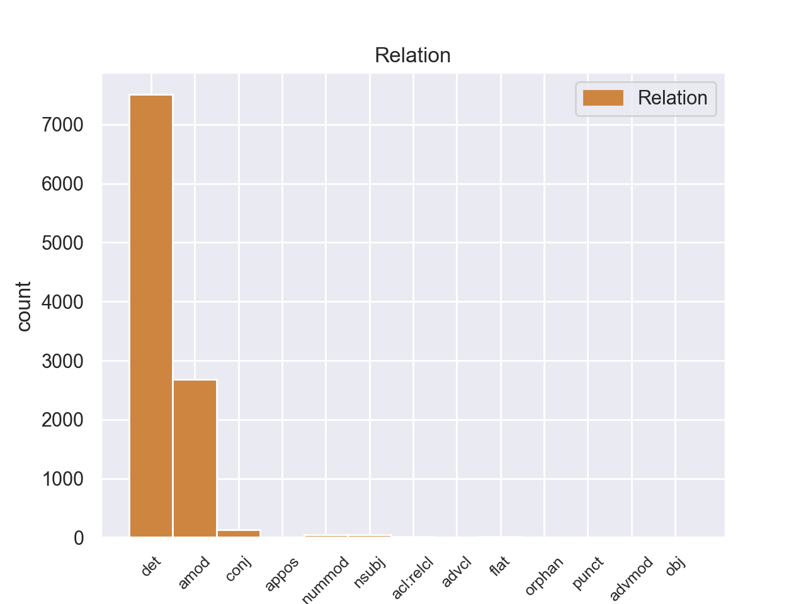
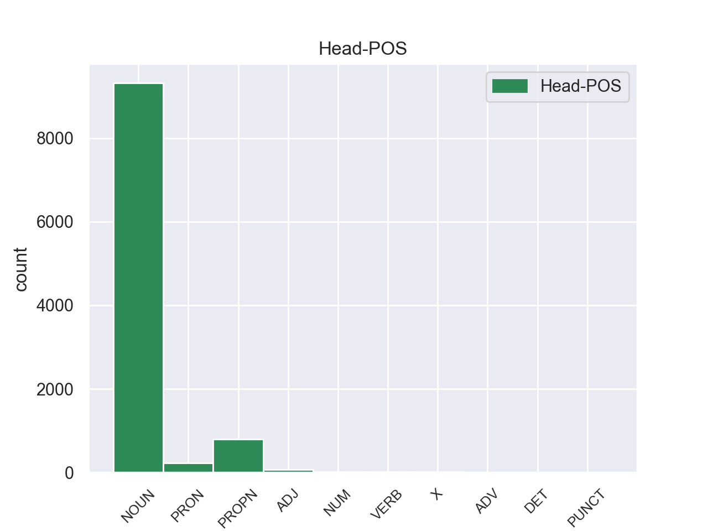
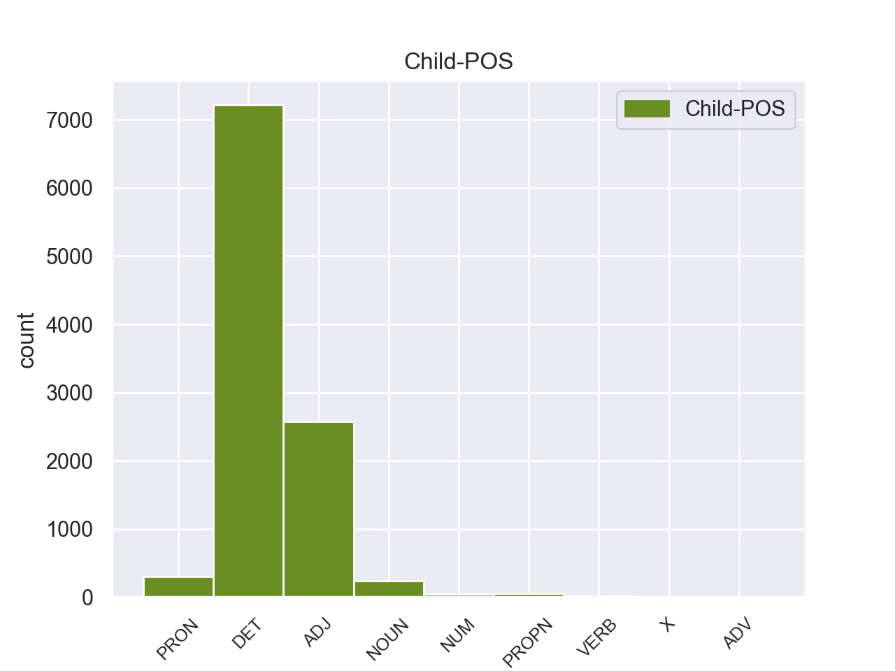

Distribution of features within this leaf



Agreement Rules sorted by frequency.
- When the dependent token is the determiner(det) of the head token, and the head token is NOUN and the dependent token is DET.
1 Αυτό _ _ _ _ 0 _ _ _
2 μπορεί _ _ _ _ 0 _ _ _
3 να _ _ _ _ 0 _ _ _
4 μην _ _ _ _ 0 _ _ _
5 οδηγήσει _ _ _ _ 0 _ _ _
6 σ _ _ _ _ 0 _ _ _
7 τη _ _ _ _ 0 _ _ _
8 λήξη _ _ _ _ 0 _ _ _
9 του _ _ _ _ 0 _ _ _
10 εν _ _ _ _ 0 _ _ _
11 λόγω _ _ _ _ 0 _ _ _
12 ζητήματος _ _ _ _ 0 _ _ _
13 αλλά _ _ _ _ 0 _ _ _
14 , _ _ _ _ 0 _ _ _
15 σ _ _ _ _ 0 _ _ _
16 τη _ _ _ _ 0 _ _ _
17 μορφή _ _ _ _ 0 _ _ _
18 υπό _ _ _ _ 0 _ _ _
19 την _ _ _ _ 0 _ _ _
20 οποία _ _ _ _ 0 _ _ _
21 την _ _ _ _ 0 _ _ _
22 λάβαμε _ _ _ _ 0 _ _ _
23 , _ _ _ _ 0 _ _ _
24 αυτή _ _ _ _ 0 _ _ _
25 η _ _ _ _ 0 _ _ _
26 αίτηση _ _ _ _ 0 _ _ _
27 άρσης _ _ _ _ 0 _ _ _
28 της _ _ _ _ 0 _ _ _
29 ασυλίας _ _ _ _ 0 _ _ _
30 ήταν _ _ _ _ 0 _ _ _
31 , _ _ _ _ 0 _ _ _
32 κατά _ _ _ _ 0 _ _ _
33 την _ _ _ _ 0 _ _ _
34 άποψη _ _ _ _ 0 _ _ _
35 της _ _ _ _ 0 _ _ _
36 Επιτροπής _ _ _ _ 0 _ _ _
37 Νομικών _ _ _ _ 0 _ _ _
38 Θεμάτων _ _ _ _ 0 _ _ _
39 , _ _ _ _ 0 _ _ _
40 απαράδεκτη _ _ _ _ 0 _ _ _
41 , _ _ _ _ 0 _ _ _
42 άποψη _ _ _ _ 0 _ _ _
43 την _ _ _ _ 0 _ _ _
44 οποία _ _ _ _ 0 _ _ _
45 συνιστώ _ _ _ _ 0 _ _ _
46 σ _ _ _ _ 0 _ _ _
47 το ο DET _ Case=Acc|Gender=Neut|Number=Sing 48 det _ _
48 Σώμα Σώμα NOUN _ Case=Acc|Gender=Neut|Number=Sing 0 _ _ _
49 να _ _ _ _ 0 _ _ _
50 υιοθετήσει _ _ _ _ 0 _ _ _
51 . _ _ _ _ 0 _ _ _
1 Αυτό _ _ _ _ 0 _ _ _
2 μπορεί _ _ _ _ 0 _ _ _
3 να _ _ _ _ 0 _ _ _
4 μην _ _ _ _ 0 _ _ _
5 οδηγήσει _ _ _ _ 0 _ _ _
6 σ _ _ _ _ 0 _ _ _
7 τη _ _ _ _ 0 _ _ _
8 λήξη _ _ _ _ 0 _ _ _
9 του _ _ _ _ 0 _ _ _
10 εν _ _ _ _ 0 _ _ _
11 λόγω _ _ _ _ 0 _ _ _
12 ζητήματος _ _ _ _ 0 _ _ _
13 αλλά _ _ _ _ 0 _ _ _
14 , _ _ _ _ 0 _ _ _
15 σ _ _ _ _ 0 _ _ _
16 τη _ _ _ _ 0 _ _ _
17 μορφή _ _ _ _ 0 _ _ _
18 υπό _ _ _ _ 0 _ _ _
19 την _ _ _ _ 0 _ _ _
20 οποία _ _ _ _ 0 _ _ _
21 την _ _ _ _ 0 _ _ _
22 λάβαμε _ _ _ _ 0 _ _ _
23 , _ _ _ _ 0 _ _ _
24 αυτή _ _ _ _ 0 _ _ _
25 η _ _ _ _ 0 _ _ _
26 αίτηση _ _ _ _ 0 _ _ _
27 άρσης _ _ _ _ 0 _ _ _
28 της _ _ _ _ 0 _ _ _
29 ασυλίας _ _ _ _ 0 _ _ _
30 ήταν _ _ _ _ 0 _ _ _
31 , _ _ _ _ 0 _ _ _
32 κατά _ _ _ _ 0 _ _ _
33 την _ _ _ _ 0 _ _ _
34 άποψη _ _ _ _ 0 _ _ _
35 της _ _ _ _ 0 _ _ _
36 Επιτροπής _ _ _ _ 0 _ _ _
37 Νομικών νομικός ADJ _ Case=Gen|Gender=Fem|Number=Sing 38 amod _ _
38 Θεμάτων θεμάτω NOUN _ Case=Gen|Gender=Neut|Number=Plur 0 _ _ _
39 , _ _ _ _ 0 _ _ _
40 απαράδεκτη _ _ _ _ 0 _ _ _
41 , _ _ _ _ 0 _ _ _
42 άποψη _ _ _ _ 0 _ _ _
43 την _ _ _ _ 0 _ _ _
44 οποία _ _ _ _ 0 _ _ _
45 συνιστώ _ _ _ _ 0 _ _ _
46 σ _ _ _ _ 0 _ _ _
47 το _ _ _ _ 0 _ _ _
48 Σώμα _ _ _ _ 0 _ _ _
49 να _ _ _ _ 0 _ _ _
50 υιοθετήσει _ _ _ _ 0 _ _ _
51 . _ _ _ _ 0 _ _ _
1 Ο _ _ _ _ 0 _ _ _
2 Εισαγγελέας _ _ _ _ 0 _ _ _
3 σ _ _ _ _ 0 _ _ _
4 τη ο DET _ Case=Acc|Definite=Def|Gender=Fem|Number=Sing|PronType=Art 5 det _ _
5 Γαλλία Γαλλία PROPN _ Case=Acc|Gender=Fem|Number=Sing 0 _ _ _
6 έχει _ _ _ _ 0 _ _ _
7 το _ _ _ _ 0 _ _ _
8 δικαίωμα _ _ _ _ 0 _ _ _
9 να _ _ _ _ 0 _ _ _
10 εκπληρώνει _ _ _ _ 0 _ _ _
11 τα _ _ _ _ 0 _ _ _
12 καθήκοντά _ _ _ _ 0 _ _ _
13 του _ _ _ _ 0 _ _ _
14 βάσει _ _ _ _ 0 _ _ _
15 του _ _ _ _ 0 _ _ _
16 νόμου _ _ _ _ 0 _ _ _
17 και _ _ _ _ 0 _ _ _
18 το _ _ _ _ 0 _ _ _
19 Σώμα _ _ _ _ 0 _ _ _
20 δεν _ _ _ _ 0 _ _ _
21 λαμβάνει _ _ _ _ 0 _ _ _
22 θέση _ _ _ _ 0 _ _ _
23 σχετικά _ _ _ _ 0 _ _ _
24 με _ _ _ _ 0 _ _ _
25 αυτό _ _ _ _ 0 _ _ _
26 . _ _ _ _ 0 _ _ _
1 Αυτό _ _ _ _ 0 _ _ _
2 μπορεί _ _ _ _ 0 _ _ _
3 να _ _ _ _ 0 _ _ _
4 μην _ _ _ _ 0 _ _ _
5 οδηγήσει _ _ _ _ 0 _ _ _
6 σ _ _ _ _ 0 _ _ _
7 τη _ _ _ _ 0 _ _ _
8 λήξη _ _ _ _ 0 _ _ _
9 του _ _ _ _ 0 _ _ _
10 εν _ _ _ _ 0 _ _ _
11 λόγω _ _ _ _ 0 _ _ _
12 ζητήματος _ _ _ _ 0 _ _ _
13 αλλά _ _ _ _ 0 _ _ _
14 , _ _ _ _ 0 _ _ _
15 σ _ _ _ _ 0 _ _ _
16 τη _ _ _ _ 0 _ _ _
17 μορφή μορφή NOUN _ Case=Acc|Gender=Fem|Number=Sing 0 _ _ _
18 υπό _ _ _ _ 0 _ _ _
19 την _ _ _ _ 0 _ _ _
20 οποία _ _ _ _ 0 _ _ _
21 την ο PRON _ Case=Acc|Gender=Neut|Number=Sing|Person=3|PronType=Prs 17 det _ _
22 λάβαμε _ _ _ _ 0 _ _ _
23 , _ _ _ _ 0 _ _ _
24 αυτή _ _ _ _ 0 _ _ _
25 η _ _ _ _ 0 _ _ _
26 αίτηση _ _ _ _ 0 _ _ _
27 άρσης _ _ _ _ 0 _ _ _
28 της _ _ _ _ 0 _ _ _
29 ασυλίας _ _ _ _ 0 _ _ _
30 ήταν _ _ _ _ 0 _ _ _
31 , _ _ _ _ 0 _ _ _
32 κατά _ _ _ _ 0 _ _ _
33 την _ _ _ _ 0 _ _ _
34 άποψη _ _ _ _ 0 _ _ _
35 της _ _ _ _ 0 _ _ _
36 Επιτροπής _ _ _ _ 0 _ _ _
37 Νομικών _ _ _ _ 0 _ _ _
38 Θεμάτων _ _ _ _ 0 _ _ _
39 , _ _ _ _ 0 _ _ _
40 απαράδεκτη _ _ _ _ 0 _ _ _
41 , _ _ _ _ 0 _ _ _
42 άποψη _ _ _ _ 0 _ _ _
43 την _ _ _ _ 0 _ _ _
44 οποία _ _ _ _ 0 _ _ _
45 συνιστώ _ _ _ _ 0 _ _ _
46 σ _ _ _ _ 0 _ _ _
47 το _ _ _ _ 0 _ _ _
48 Σώμα _ _ _ _ 0 _ _ _
49 να _ _ _ _ 0 _ _ _
50 υιοθετήσει _ _ _ _ 0 _ _ _
51 . _ _ _ _ 0 _ _ _
1 Αυτό _ _ _ _ 0 _ _ _
2 μπορεί _ _ _ _ 0 _ _ _
3 να _ _ _ _ 0 _ _ _
4 μην _ _ _ _ 0 _ _ _
5 οδηγήσει _ _ _ _ 0 _ _ _
6 σ _ _ _ _ 0 _ _ _
7 τη _ _ _ _ 0 _ _ _
8 λήξη _ _ _ _ 0 _ _ _
9 του _ _ _ _ 0 _ _ _
10 εν _ _ _ _ 0 _ _ _
11 λόγω _ _ _ _ 0 _ _ _
12 ζητήματος _ _ _ _ 0 _ _ _
13 αλλά _ _ _ _ 0 _ _ _
14 , _ _ _ _ 0 _ _ _
15 σ _ _ _ _ 0 _ _ _
16 τη _ _ _ _ 0 _ _ _
17 μορφή _ _ _ _ 0 _ _ _
18 υπό _ _ _ _ 0 _ _ _
19 την _ _ _ _ 0 _ _ _
20 οποία _ _ _ _ 0 _ _ _
21 την _ _ _ _ 0 _ _ _
22 λάβαμε _ _ _ _ 0 _ _ _
23 , _ _ _ _ 0 _ _ _
24 αυτή _ _ _ _ 0 _ _ _
25 η _ _ _ _ 0 _ _ _
26 αίτηση _ _ _ _ 0 _ _ _
27 άρσης _ _ _ _ 0 _ _ _
28 της _ _ _ _ 0 _ _ _
29 ασυλίας _ _ _ _ 0 _ _ _
30 ήταν _ _ _ _ 0 _ _ _
31 , _ _ _ _ 0 _ _ _
32 κατά _ _ _ _ 0 _ _ _
33 την _ _ _ _ 0 _ _ _
34 άποψη _ _ _ _ 0 _ _ _
35 της _ _ _ _ 0 _ _ _
36 Επιτροπής _ _ _ _ 0 _ _ _
37 Νομικών _ _ _ _ 0 _ _ _
38 Θεμάτων _ _ _ _ 0 _ _ _
39 , _ _ _ _ 0 _ _ _
40 απαράδεκτη _ _ _ _ 0 _ _ _
41 , _ _ _ _ 0 _ _ _
42 άποψη _ _ _ _ 0 _ _ _
43 την ο DET _ Case=Acc|Definite=Def|Gender=Fem|Number=Sing|PronType=Art 44 det _ _
44 οποία οποία PRON _ Case=Acc|Gender=Fem|Number=Sing|Person=3|PronType=Rel 0 _ _ _
45 συνιστώ _ _ _ _ 0 _ _ _
46 σ _ _ _ _ 0 _ _ _
47 το _ _ _ _ 0 _ _ _
48 Σώμα _ _ _ _ 0 _ _ _
49 να _ _ _ _ 0 _ _ _
50 υιοθετήσει _ _ _ _ 0 _ _ _
51 . _ _ _ _ 0 _ _ _
1 Αφενός _ _ _ _ 0 _ _ _
2 , _ _ _ _ 0 _ _ _
3 σ _ _ _ _ 0 _ _ _
4 την _ _ _ _ 0 _ _ _
5 αίτηση _ _ _ _ 0 _ _ _
6 λήψης _ _ _ _ 0 _ _ _
7 μέτρων μέτρός NOUN _ Case=Gen|Gender=Fem|Number=Plur 9 amod _ _
8 δικαστικής _ _ _ _ 0 _ _ _
9 επιτήρησης επιτήρηση NOUN _ Case=Gen|Gender=Fem|Number=Sing 0 _ _ _
10 δεν _ _ _ _ 0 _ _ _
11 διευκρινίζονται _ _ _ _ 0 _ _ _
12 οι _ _ _ _ 0 _ _ _
13 χώρες _ _ _ _ 0 _ _ _
14 τις _ _ _ _ 0 _ _ _
15 οποίες _ _ _ _ 0 _ _ _
16 θα _ _ _ _ 0 _ _ _
17 απαγορευθεί _ _ _ _ 0 _ _ _
18 να _ _ _ _ 0 _ _ _
19 επισκεφθούν _ _ _ _ 0 _ _ _
20 οι _ _ _ _ 0 _ _ _
21 κατηγορούμενοι _ _ _ _ 0 _ _ _
22 και _ _ _ _ 0 _ _ _
23 αφετέρου _ _ _ _ 0 _ _ _
24 , _ _ _ _ 0 _ _ _
25 ύστερα _ _ _ _ 0 _ _ _
26 από _ _ _ _ 0 _ _ _
27 απόφαση _ _ _ _ 0 _ _ _
28 του _ _ _ _ 0 _ _ _
29 Ακυρωτικού _ _ _ _ 0 _ _ _
30 Δικαστηρίου _ _ _ _ 0 _ _ _
31 , _ _ _ _ 0 _ _ _
32 το _ _ _ _ 0 _ _ _
33 εύρος _ _ _ _ 0 _ _ _
34 της _ _ _ _ 0 _ _ _
35 διαδικασίας _ _ _ _ 0 _ _ _
36 μένει _ _ _ _ 0 _ _ _
37 να _ _ _ _ 0 _ _ _
38 προσδιοριστεί _ _ _ _ 0 _ _ _
39 με _ _ _ _ 0 _ _ _
40 απόφαση _ _ _ _ 0 _ _ _
41 του _ _ _ _ 0 _ _ _
42 Εφετείου _ _ _ _ 0 _ _ _
43 . _ _ _ _ 0 _ _ _
1 Με _ _ _ _ 0 _ _ _
2 αυτές _ _ _ _ 0 _ _ _
3 τις _ _ _ _ 0 _ _ _
4 κατηγορίες _ _ _ _ 0 _ _ _
5 , _ _ _ _ 0 _ _ _
6 από _ _ _ _ 0 _ _ _
7 τις _ _ _ _ 0 _ _ _
8 οποίες _ _ _ _ 0 _ _ _
9 η _ _ _ _ 0 _ _ _
10 πρώτη _ _ _ _ 0 _ _ _
11 αφορά _ _ _ _ 0 _ _ _
12 λαθρεμπόριο _ _ _ _ 0 _ _ _
13 όπλων _ _ _ _ 0 _ _ _
14 κλπ. _ _ _ _ 0 _ _ _
15 , _ _ _ _ 0 _ _ _
16 και _ _ _ _ 0 _ _ _
17 βαρύνει _ _ _ _ 0 _ _ _
18 τόσο _ _ _ _ 0 _ _ _
19 τον _ _ _ _ 0 _ _ _
20 κ. _ _ _ _ 0 _ _ _
21 Pasqua _ _ _ _ 0 _ _ _
22 όσο _ _ _ _ 0 _ _ _
23 και _ _ _ _ 0 _ _ _
24 τον _ _ _ _ 0 _ _ _
25 κ. _ _ _ _ 0 _ _ _
26 Marchiani _ _ _ _ 0 _ _ _
27 , _ _ _ _ 0 _ _ _
28 ενώ _ _ _ _ 0 _ _ _
29 η _ _ _ _ 0 _ _ _
30 δεύτερη _ _ _ _ 0 _ _ _
31 στρέφεται _ _ _ _ 0 _ _ _
32 μόνον _ _ _ _ 0 _ _ _
33 εναντίον _ _ _ _ 0 _ _ _
34 του _ _ _ _ 0 _ _ _
35 κ. _ _ _ _ 0 _ _ _
36 Pasqua _ _ _ _ 0 _ _ _
37 , _ _ _ _ 0 _ _ _
38 οι _ _ _ _ 0 _ _ _
39 ανακριτές _ _ _ _ 0 _ _ _
40 δικαστές _ _ _ _ 0 _ _ _
41 ζητούν _ _ _ _ 0 _ _ _
42 την _ _ _ _ 0 _ _ _
43 άρση _ _ _ _ 0 _ _ _
44 της _ _ _ _ 0 _ _ _
45 βουλευτικής _ _ _ _ 0 _ _ _
46 ασυλίας _ _ _ _ 0 _ _ _
47 των _ _ _ _ 0 _ _ _
48 εν _ _ _ _ 0 _ _ _
49 λόγω _ _ _ _ 0 _ _ _
50 δύο _ _ _ _ 0 _ _ _
51 κυρίων _ _ _ _ 0 _ _ _
52 , _ _ _ _ 0 _ _ _
53 προκειμένου _ _ _ _ 0 _ _ _
54 να _ _ _ _ 0 _ _ _
55 τους _ _ _ _ 0 _ _ _
56 επιβληθούν _ _ _ _ 0 _ _ _
57 ορισμένα _ _ _ _ 0 _ _ _
58 μέτρα _ _ _ _ 0 _ _ _
59 δικαστικής _ _ _ _ 0 _ _ _
60 επιτήρησης _ _ _ _ 0 _ _ _
61 : _ _ _ _ 0 _ _ _
62 να _ _ _ _ 0 _ _ _
63 τους _ _ _ _ 0 _ _ _
64 απαγορευθεί _ _ _ _ 0 _ _ _
65 η _ _ _ _ 0 _ _ _
66 επαφή _ _ _ _ 0 _ _ _
67 με _ _ _ _ 0 _ _ _
68 διάφορους _ _ _ _ 0 _ _ _
69 μάρτυρες μάρτυρες NOUN _ Case=Acc|Gender=Neut|Number=Plur 0 _ _ _
70 ή _ _ _ _ 0 _ _ _
71 συγκατηγορουμένους συγκατηγορουμένους NOUN _ Case=Acc|Gender=Masc|Number=Plur 69 conj _ _
72 σ _ _ _ _ 0 _ _ _
73 τις _ _ _ _ 0 _ _ _
74 υποθέσεις _ _ _ _ 0 _ _ _
75 αυτές _ _ _ _ 0 _ _ _
76 και _ _ _ _ 0 _ _ _
77 η _ _ _ _ 0 _ _ _
78 μετάβαση _ _ _ _ 0 _ _ _
79 σε _ _ _ _ 0 _ _ _
80 διάφορες _ _ _ _ 0 _ _ _
81 χώρες _ _ _ _ 0 _ _ _
82 , _ _ _ _ 0 _ _ _
83 καθώς _ _ _ _ 0 _ _ _
84 και _ _ _ _ 0 _ _ _
85 να _ _ _ _ 0 _ _ _
86 τους _ _ _ _ 0 _ _ _
87 επιβληθεί _ _ _ _ 0 _ _ _
88 ενδεχομένως _ _ _ _ 0 _ _ _
89 η _ _ _ _ 0 _ _ _
90 καταβολή _ _ _ _ 0 _ _ _
91 εγγύησης _ _ _ _ 0 _ _ _
92 . _ _ _ _ 0 _ _ _
1 Σ _ _ _ _ 0 _ _ _
2 τη _ _ _ _ 0 _ _ _
3 Ρωσία _ _ _ _ 0 _ _ _
4 αυξάνεται _ _ _ _ 0 _ _ _
5 συνεχώς _ _ _ _ 0 _ _ _
6 ο _ _ _ _ 0 _ _ _
7 αριθμός _ _ _ _ 0 _ _ _
8 των _ _ _ _ 0 _ _ _
9 αυτοκτονιών _ _ _ _ 0 _ _ _
10 των _ _ _ _ 0 _ _ _
11 νέων _ _ _ _ 0 _ _ _
12 ανθρώπων _ _ _ _ 0 _ _ _
13 , _ _ _ _ 0 _ _ _
14 δίνοντας _ _ _ _ 0 _ _ _
15 σ _ _ _ _ 0 _ _ _
16 τη _ _ _ _ 0 _ _ _
17 χώρα _ _ _ _ 0 _ _ _
18 την _ _ _ _ 0 _ _ _
19 τρίτη _ _ _ _ 0 _ _ _
20 θέση _ _ _ _ 0 _ _ _
21 σ _ _ _ _ 0 _ _ _
22 την _ _ _ _ 0 _ _ _
23 κατάταξη _ _ _ _ 0 _ _ _
24 για _ _ _ _ 0 _ _ _
25 τους _ _ _ _ 0 _ _ _
26 αριθμούς _ _ _ _ 0 _ _ _
27 αυτοκτονιών _ _ _ _ 0 _ _ _
28 παγκοσμίως _ _ _ _ 0 _ _ _
29 - _ _ _ _ 0 _ _ _
30 μετά _ _ _ _ 0 _ _ _
31 τις _ _ _ _ 0 _ _ _
32 γειτονικές γειτονικέός ADJ _ Case=Acc|Gender=Fem|Number=Plur 33 amod _ _
33 Λευκορωσία Λευκορωσία PROPN _ Case=Acc|Gender=Fem|Number=Sing 0 _ _ _
34 και _ _ _ _ 0 _ _ _
35 Καζακστάν _ _ _ _ 0 _ _ _
36 . _ _ _ _ 0 _ _ _
1 πρόκειται _ _ _ _ 0 _ _ _
2 για _ _ _ _ 0 _ _ _
3 αυτό _ _ _ _ 0 _ _ _
4 το _ _ _ _ 0 _ _ _
5 οποίο _ _ _ _ 0 _ _ _
6 αποκαλύφθηκε _ _ _ _ 0 _ _ _
7 κατά _ _ _ _ 0 _ _ _
8 τη _ _ _ _ 0 _ _ _
9 διάρκεια _ _ _ _ 0 _ _ _
10 αυτής _ _ _ _ 0 _ _ _
11 της _ _ _ _ 0 _ _ _
12 διαδικασίας _ _ _ _ 0 _ _ _
13 , _ _ _ _ 0 _ _ _
14 ότι _ _ _ _ 0 _ _ _
15 ο _ _ _ _ 0 _ _ _
16 Εισαγγελέας _ _ _ _ 0 _ _ _
17 κάποια _ _ _ _ 0 _ _ _
18 στιγμή _ _ _ _ 0 _ _ _
19 ζήτησε _ _ _ _ 0 _ _ _
20 από _ _ _ _ 0 _ _ _
21 την _ _ _ _ 0 _ _ _
22 Πρόεδρο _ _ _ _ 0 _ _ _
23 του _ _ _ _ 0 _ _ _
24 Σώματος _ _ _ _ 0 _ _ _
25 , _ _ _ _ 0 _ _ _
26 την _ _ _ _ 0 _ _ _
27 προκάτοχό _ _ _ _ 0 _ _ _
28 σας _ _ _ _ 0 _ _ _
29 , _ _ _ _ 0 _ _ _
30 λεπτομέρειες _ _ _ _ 0 _ _ _
31 για _ _ _ _ 0 _ _ _
32 την _ _ _ _ 0 _ _ _
33 ψήφο _ _ _ _ 0 _ _ _
34 που _ _ _ _ 0 _ _ _
35 έχουν _ _ _ _ 0 _ _ _
36 δώσει _ _ _ _ 0 _ _ _
37 οι _ _ _ _ 0 _ _ _
38 δύο δύο NUM _ Case=Acc|Gender=Masc|Number=Plur 40 nummod _ _
39 συγκεκριμένοι _ _ _ _ 0 _ _ _
40 βουλευτές βουλευτές NOUN _ Case=Acc|Gender=Masc|Number=Plur 0 _ _ _
41 προκειμένου _ _ _ _ 0 _ _ _
42 να _ _ _ _ 0 _ _ _
43 διευκρινιστεί _ _ _ _ 0 _ _ _
44 περαιτέρω _ _ _ _ 0 _ _ _
45 η _ _ _ _ 0 _ _ _
46 πιθανότητα _ _ _ _ 0 _ _ _
47 να _ _ _ _ 0 _ _ _
48 είχαν _ _ _ _ 0 _ _ _
49 ασκήσει _ _ _ _ 0 _ _ _
50 αθέμιτη _ _ _ _ 0 _ _ _
51 επιρροή _ _ _ _ 0 _ _ _
52 . _ _ _ _ 0 _ _ _
1 Οι _ _ _ _ 0 _ _ _
2 κρατούμενοι _ _ _ _ 0 _ _ _
3 έδωσαν _ _ _ _ 0 _ _ _
4 σ _ _ _ _ 0 _ _ _
5 τους ο DET _ Case=Acc|Definite=Def|Gender=Masc|Number=Plur|PronType=Art 6 det _ _
6 δεσμοφύλακες δεσμοφύλακες ADJ _ Case=Acc|Gender=Masc|Number=Plur 0 _ _ _
7 χουρμάδες _ _ _ _ 0 _ _ _
8 με _ _ _ _ 0 _ _ _
9 υπνωτικό _ _ _ _ 0 _ _ _
10 και _ _ _ _ 0 _ _ _
11 όταν _ _ _ _ 0 _ _ _
12 οι _ _ _ _ 0 _ _ _
13 τελευταίοι _ _ _ _ 0 _ _ _
14 αποκοιμήθηκαν _ _ _ _ 0 _ _ _
15 κατάφεραν _ _ _ _ 0 _ _ _
16 να _ _ _ _ 0 _ _ _
17 αποδράσουν _ _ _ _ 0 _ _ _
18 . _ _ _ _ 0 _ _ _
1 Ο ο DET _ Case=Nom|Definite=Def|Gender=Masc|Number=Sing|PronType=Art 2 det _ _
2 Μπαράκ Μπαράκ X _ Case=Nom|Gender=Masc|Number=Sing 0 _ _ _
3 Ομπάμα _ _ _ _ 0 _ _ _
4 ανέφερε _ _ _ _ 0 _ _ _
5 ότι _ _ _ _ 0 _ _ _
6 « _ _ _ _ 0 _ _ _
7 ήδη _ _ _ _ 0 _ _ _
8 υπάρχουν _ _ _ _ 0 _ _ _
9 πολλές _ _ _ _ 0 _ _ _
10 αναφορές _ _ _ _ 0 _ _ _
11 για _ _ _ _ 0 _ _ _
12 πόλεμο _ _ _ _ 0 _ _ _
13 με _ _ _ _ 0 _ _ _
14 το _ _ _ _ 0 _ _ _
15 Ιράν _ _ _ _ 0 _ _ _
16 » _ _ _ _ 0 _ _ _
17 και _ _ _ _ 0 _ _ _
18 επεσήμανε _ _ _ _ 0 _ _ _
19 τέτοιες _ _ _ _ 0 _ _ _
20 συζητήσεις _ _ _ _ 0 _ _ _
21 « _ _ _ _ 0 _ _ _
22 είναι _ _ _ _ 0 _ _ _
23 προς _ _ _ _ 0 _ _ _
24 όφελος _ _ _ _ 0 _ _ _
25 της _ _ _ _ 0 _ _ _
26 Τεχεράνης _ _ _ _ 0 _ _ _
27 γιατί _ _ _ _ 0 _ _ _
28 αυξάνουν _ _ _ _ 0 _ _ _
29 τις _ _ _ _ 0 _ _ _
30 τιμές _ _ _ _ 0 _ _ _
31 του _ _ _ _ 0 _ _ _
32 πετρελαίου _ _ _ _ 0 _ _ _
33 , _ _ _ _ 0 _ _ _
34 σ _ _ _ _ 0 _ _ _
35 το _ _ _ _ 0 _ _ _
36 οποίο _ _ _ _ 0 _ _ _
37 βασίζεται _ _ _ _ 0 _ _ _
38 η _ _ _ _ 0 _ _ _
39 Ιρανική _ _ _ _ 0 _ _ _
40 Κυβέρνηση _ _ _ _ 0 _ _ _
41 για _ _ _ _ 0 _ _ _
42 την _ _ _ _ 0 _ _ _
43 χρηματοδότηση _ _ _ _ 0 _ _ _
44 του _ _ _ _ 0 _ _ _
45 πυρηνικού _ _ _ _ 0 _ _ _
46 της _ _ _ _ 0 _ _ _
47 προγράμματος _ _ _ _ 0 _ _ _
48 » _ _ _ _ 0 _ _ _
49 . _ _ _ _ 0 _ _ _
1 Έγιναν _ _ _ _ 0 _ _ _
2 βουλευτικές _ _ _ _ 0 _ _ _
3 εκλογές _ _ _ _ 0 _ _ _
4 την ο DET _ Case=Acc|Definite=Def|Gender=Fem|Number=Sing|PronType=Art 5 det _ _
5 1_Νοεμβρίου_1920 1_νοεμβρίου_1920 NUM _ Case=Acc|Gender=Fem|Number=Sing 0 _ _ _
6 . _ _ _ _ 0 _ _ _
1 Οι _ _ _ _ 0 _ _ _
2 νέοι _ _ _ _ 0 _ _ _
3 Κινέζοι _ _ _ _ 0 _ _ _
4 άποικοι _ _ _ _ 0 _ _ _
5 έχουν _ _ _ _ 0 _ _ _
6 δημιουργήσει _ _ _ _ 0 _ _ _
7 μία _ _ _ _ 0 _ _ _
8 εναλλασσόμενη _ _ _ _ 0 _ _ _
9 κοινωνία _ _ _ _ 0 _ _ _
10 : _ _ _ _ 0 _ _ _
11 ένα _ _ _ _ 0 _ _ _
12 κινεζικό _ _ _ _ 0 _ _ _
13 απαρτχάιντ _ _ _ _ 0 _ _ _
14 το _ _ _ _ 0 _ _ _
15 οποίο _ _ _ _ 0 _ _ _
16 , _ _ _ _ 0 _ _ _
17 μέσω _ _ _ _ 0 _ _ _
18 της _ _ _ _ 0 _ _ _
19 άρνησης _ _ _ _ 0 _ _ _
20 ίσων _ _ _ _ 0 _ _ _
21 κοινωνικών _ _ _ _ 0 _ _ _
22 και _ _ _ _ 0 _ _ _
23 οικονομικών _ _ _ _ 0 _ _ _
24 δικαιωμάτων _ _ _ _ 0 _ _ _
25 σ _ _ _ _ 0 _ _ _
26 την _ _ _ _ 0 _ _ _
27 ίδια ίδιος PRON _ Case=Acc|Gender=Fem|Number=Sing 30 amod _ _
28 μας _ _ _ _ 0 _ _ _
29 τη _ _ _ _ 0 _ _ _
30 γη γη NOUN _ Case=Acc|Gender=Fem|Number=Sing 0 _ _ _
31 , _ _ _ _ 0 _ _ _
32 προσπαθεί _ _ _ _ 0 _ _ _
33 να _ _ _ _ 0 _ _ _
34 μας _ _ _ _ 0 _ _ _
35 καταβάλει _ _ _ _ 0 _ _ _
36 και _ _ _ _ 0 _ _ _
37 να _ _ _ _ 0 _ _ _
38 μας _ _ _ _ 0 _ _ _
39 απορροφήσει _ _ _ _ 0 _ _ _
40 . _ _ _ _ 0 _ _ _
1 Η _ _ _ _ 0 _ _ _
2 Μπενφίκα Μπενφίκα NOUN _ Case=Nom|Gender=Fem|Number=Sing 5 nsubj _ _
3 ήταν _ _ _ _ 0 _ _ _
4 πιο _ _ _ _ 0 _ _ _
5 επιθετική επιθετική ADJ _ Case=Nom|Gender=Fem|Number=Sing 0 _ _ _
6 και _ _ _ _ 0 _ _ _
7 καλύτερη _ _ _ _ 0 _ _ _
8 σ _ _ _ _ 0 _ _ _
9 το _ _ _ _ 0 _ _ _
10 πρώτο _ _ _ _ 0 _ _ _
11 ημίχρονο _ _ _ _ 0 _ _ _
12 , _ _ _ _ 0 _ _ _
13 με _ _ _ _ 0 _ _ _
14 αποτέλεσμα _ _ _ _ 0 _ _ _
15 να _ _ _ _ 0 _ _ _
16 ανοίξει _ _ _ _ 0 _ _ _
17 το _ _ _ _ 0 _ _ _
18 σκορ _ _ _ _ 0 _ _ _
19 σ _ _ _ _ 0 _ _ _
20 το _ _ _ _ 0 _ _ _
21 πρώτο _ _ _ _ 0 _ _ _
22 λεπτό _ _ _ _ 0 _ _ _
23 των _ _ _ _ 0 _ _ _
24 καθυστερήσεων _ _ _ _ 0 _ _ _
25 , _ _ _ _ 0 _ _ _
26 χάρη _ _ _ _ 0 _ _ _
27 σ _ _ _ _ 0 _ _ _
28 τον _ _ _ _ 0 _ _ _
29 Μάξι _ _ _ _ 0 _ _ _
30 Περέιρα _ _ _ _ 0 _ _ _
31 . _ _ _ _ 0 _ _ _
1 Με _ _ _ _ 0 _ _ _
2 αυτές _ _ _ _ 0 _ _ _
3 τις _ _ _ _ 0 _ _ _
4 κατηγορίες _ _ _ _ 0 _ _ _
5 , _ _ _ _ 0 _ _ _
6 από _ _ _ _ 0 _ _ _
7 τις _ _ _ _ 0 _ _ _
8 οποίες _ _ _ _ 0 _ _ _
9 η _ _ _ _ 0 _ _ _
10 πρώτη _ _ _ _ 0 _ _ _
11 αφορά _ _ _ _ 0 _ _ _
12 λαθρεμπόριο _ _ _ _ 0 _ _ _
13 όπλων _ _ _ _ 0 _ _ _
14 κλπ. _ _ _ _ 0 _ _ _
15 , _ _ _ _ 0 _ _ _
16 και _ _ _ _ 0 _ _ _
17 βαρύνει _ _ _ _ 0 _ _ _
18 τόσο _ _ _ _ 0 _ _ _
19 τον _ _ _ _ 0 _ _ _
20 κ. _ _ _ _ 0 _ _ _
21 Pasqua _ _ _ _ 0 _ _ _
22 όσο _ _ _ _ 0 _ _ _
23 και _ _ _ _ 0 _ _ _
24 τον _ _ _ _ 0 _ _ _
25 κ. _ _ _ _ 0 _ _ _
26 Marchiani _ _ _ _ 0 _ _ _
27 , _ _ _ _ 0 _ _ _
28 ενώ _ _ _ _ 0 _ _ _
29 η _ _ _ _ 0 _ _ _
30 δεύτερη _ _ _ _ 0 _ _ _
31 στρέφεται _ _ _ _ 0 _ _ _
32 μόνον _ _ _ _ 0 _ _ _
33 εναντίον _ _ _ _ 0 _ _ _
34 του _ _ _ _ 0 _ _ _
35 κ. _ _ _ _ 0 _ _ _
36 Pasqua _ _ _ _ 0 _ _ _
37 , _ _ _ _ 0 _ _ _
38 οι _ _ _ _ 0 _ _ _
39 ανακριτές _ _ _ _ 0 _ _ _
40 δικαστές _ _ _ _ 0 _ _ _
41 ζητούν _ _ _ _ 0 _ _ _
42 την _ _ _ _ 0 _ _ _
43 άρση _ _ _ _ 0 _ _ _
44 της _ _ _ _ 0 _ _ _
45 βουλευτικής _ _ _ _ 0 _ _ _
46 ασυλίας _ _ _ _ 0 _ _ _
47 των _ _ _ _ 0 _ _ _
48 εν _ _ _ _ 0 _ _ _
49 λόγω _ _ _ _ 0 _ _ _
50 δύο _ _ _ _ 0 _ _ _
51 κυρίων _ _ _ _ 0 _ _ _
52 , _ _ _ _ 0 _ _ _
53 προκειμένου _ _ _ _ 0 _ _ _
54 να _ _ _ _ 0 _ _ _
55 τους _ _ _ _ 0 _ _ _
56 επιβληθούν _ _ _ _ 0 _ _ _
57 ορισμένα _ _ _ _ 0 _ _ _
58 μέτρα _ _ _ _ 0 _ _ _
59 δικαστικής _ _ _ _ 0 _ _ _
60 επιτήρησης _ _ _ _ 0 _ _ _
61 : _ _ _ _ 0 _ _ _
62 να _ _ _ _ 0 _ _ _
63 τους _ _ _ _ 0 _ _ _
64 απαγορευθεί _ _ _ _ 0 _ _ _
65 η _ _ _ _ 0 _ _ _
66 επαφή _ _ _ _ 0 _ _ _
67 με _ _ _ _ 0 _ _ _
68 διάφορους _ _ _ _ 0 _ _ _
69 μάρτυρες _ _ _ _ 0 _ _ _
70 ή _ _ _ _ 0 _ _ _
71 συγκατηγορουμένους _ _ _ _ 0 _ _ _
72 σ _ _ _ _ 0 _ _ _
73 τις _ _ _ _ 0 _ _ _
74 υποθέσεις _ _ _ _ 0 _ _ _
75 αυτές _ _ _ _ 0 _ _ _
76 και _ _ _ _ 0 _ _ _
77 η _ _ _ _ 0 _ _ _
78 μετάβαση _ _ _ _ 0 _ _ _
79 σε _ _ _ _ 0 _ _ _
80 διάφορες διάφορος ADJ _ Case=Acc|Gender=Fem|Number=Plur 81 det _ _
81 χώρες χώρες NOUN _ Case=Acc|Gender=Fem|Number=Plur 0 _ _ _
82 , _ _ _ _ 0 _ _ _
83 καθώς _ _ _ _ 0 _ _ _
84 και _ _ _ _ 0 _ _ _
85 να _ _ _ _ 0 _ _ _
86 τους _ _ _ _ 0 _ _ _
87 επιβληθεί _ _ _ _ 0 _ _ _
88 ενδεχομένως _ _ _ _ 0 _ _ _
89 η _ _ _ _ 0 _ _ _
90 καταβολή _ _ _ _ 0 _ _ _
91 εγγύησης _ _ _ _ 0 _ _ _
92 . _ _ _ _ 0 _ _ _
1 Δεν _ _ _ _ 0 _ _ _
2 θέλω _ _ _ _ 0 _ _ _
3 να _ _ _ _ 0 _ _ _
4 κατονομάσω _ _ _ _ 0 _ _ _
5 εδώ _ _ _ _ 0 _ _ _
6 επιχειρήσεις _ _ _ _ 0 _ _ _
7 , _ _ _ _ 0 _ _ _
8 ωστόσο _ _ _ _ 0 _ _ _
9 ορισμένα _ _ _ _ 0 _ _ _
10 ονόματα ονόματα NOUN _ Case=Nom|Gender=Fem|Number=Plur 16 nsubj _ _
11 του _ _ _ _ 0 _ _ _
12 συγκεκριμένου _ _ _ _ 0 _ _ _
13 τομέα _ _ _ _ 0 _ _ _
14 μας _ _ _ _ 0 _ _ _
15 είναι _ _ _ _ 0 _ _ _
16 γνωστά γνωστά VERB _ Case=Nom|Gender=Fem|Number=Plur 0 _ _ _
17 . _ _ _ _ 0 _ _ _
1 « _ _ _ _ 0 _ _ _
2 Δεκαεννέα _ _ _ _ 0 _ _ _
3 κρατούμενοι _ _ _ _ 0 _ _ _
4 , _ _ _ _ 0 _ _ _
5 μέλη _ _ _ _ 0 _ _ _
6 της _ _ _ _ 0 _ _ _
7 Αλ _ _ _ _ 0 _ _ _
8 Κάιντα Κάιντα PROPN _ Case=Gen|Gender=Fem|Number=Sing 0 _ _ _
9 και _ _ _ _ 0 _ _ _
10 της _ _ _ _ 0 _ _ _
11 Ανσάρ Ανσάρ PROPN _ Case=Gen|Gender=Fem|Number=Sing 8 conj _ _
12 αλ-Σούνα _ _ _ _ 0 _ _ _
13 , _ _ _ _ 0 _ _ _
14 απέδρασαν _ _ _ _ 0 _ _ _
15 σ _ _ _ _ 0 _ _ _
16 τις _ _ _ _ 0 _ _ _
17 03:30 _ _ _ _ 0 _ _ _
18 από _ _ _ _ 0 _ _ _
19 τη _ _ _ _ 0 _ _ _
20 φυλακή _ _ _ _ 0 _ _ _
21 , _ _ _ _ 0 _ _ _
22 αφού _ _ _ _ 0 _ _ _
23 αποκοίμισαν _ _ _ _ 0 _ _ _
24 τους _ _ _ _ 0 _ _ _
25 δεσμοφύλακες _ _ _ _ 0 _ _ _
26 και _ _ _ _ 0 _ _ _
27 τους _ _ _ _ 0 _ _ _
28 υπόλοιπους _ _ _ _ 0 _ _ _
29 κρατούμενους _ _ _ _ 0 _ _ _
30 . _ _ _ _ 0 _ _ _
1 « _ _ _ _ 0 _ _ _
2 Δεκαεννέα δεκαεννέα ADJ _ Case=Nom|Gender=Masc|Number=Plur 3 nummod _ _
3 κρατούμενοι κρατούμενοι NOUN _ Case=Nom|Gender=Masc|Number=Plur 0 _ _ _
4 , _ _ _ _ 0 _ _ _
5 μέλη _ _ _ _ 0 _ _ _
6 της _ _ _ _ 0 _ _ _
7 Αλ _ _ _ _ 0 _ _ _
8 Κάιντα _ _ _ _ 0 _ _ _
9 και _ _ _ _ 0 _ _ _
10 της _ _ _ _ 0 _ _ _
11 Ανσάρ _ _ _ _ 0 _ _ _
12 αλ-Σούνα _ _ _ _ 0 _ _ _
13 , _ _ _ _ 0 _ _ _
14 απέδρασαν _ _ _ _ 0 _ _ _
15 σ _ _ _ _ 0 _ _ _
16 τις _ _ _ _ 0 _ _ _
17 03:30 _ _ _ _ 0 _ _ _
18 από _ _ _ _ 0 _ _ _
19 τη _ _ _ _ 0 _ _ _
20 φυλακή _ _ _ _ 0 _ _ _
21 , _ _ _ _ 0 _ _ _
22 αφού _ _ _ _ 0 _ _ _
23 αποκοίμισαν _ _ _ _ 0 _ _ _
24 τους _ _ _ _ 0 _ _ _
25 δεσμοφύλακες _ _ _ _ 0 _ _ _
26 και _ _ _ _ 0 _ _ _
27 τους _ _ _ _ 0 _ _ _
28 υπόλοιπους _ _ _ _ 0 _ _ _
29 κρατούμενους _ _ _ _ 0 _ _ _
30 . _ _ _ _ 0 _ _ _
1 Μικρή _ _ _ _ 0 _ _ _
2 και _ _ _ _ 0 _ _ _
3 Μεγάλη _ _ _ _ 0 _ _ _
4 Άμμος _ _ _ _ 0 _ _ _
5 , _ _ _ _ 0 _ _ _
6 Πισίνα _ _ _ _ 0 _ _ _
7 , _ _ _ _ 0 _ _ _
8 Γαλλικός _ _ _ _ 0 _ _ _
9 Μώλος μώλος NOUN _ Case=Nom|Gender=Fem|Number=Sing 0 _ _ _
10 , _ _ _ _ 0 _ _ _
11 Ζάβια ζάβια PROPN _ Case=Nom|Gender=Fem|Number=Sing 9 conj _ _
12 , _ _ _ _ 0 _ _ _
13 Μεγάλο _ _ _ _ 0 _ _ _
14 Στάφο _ _ _ _ 0 _ _ _
15 , _ _ _ _ 0 _ _ _
16 Πέρδικα _ _ _ _ 0 _ _ _
17 , _ _ _ _ 0 _ _ _
18 Ζέρη _ _ _ _ 0 _ _ _
19 , _ _ _ _ 0 _ _ _
20 Αρίλλας _ _ _ _ 0 _ _ _
21 . _ _ _ _ 0 _ _ _
1 « _ _ _ _ 0 _ _ _
2 Δεκαεννέα _ _ _ _ 0 _ _ _
3 κρατούμενοι _ _ _ _ 0 _ _ _
4 , _ _ _ _ 0 _ _ _
5 μέλη _ _ _ _ 0 _ _ _
6 της _ _ _ _ 0 _ _ _
7 Αλ Αλ PROPN _ Case=Gen|Gender=Fem|Number=Sing 8 amod _ _
8 Κάιντα Κάιντα PROPN _ Case=Gen|Gender=Fem|Number=Sing 0 _ _ _
9 και _ _ _ _ 0 _ _ _
10 της _ _ _ _ 0 _ _ _
11 Ανσάρ _ _ _ _ 0 _ _ _
12 αλ-Σούνα _ _ _ _ 0 _ _ _
13 , _ _ _ _ 0 _ _ _
14 απέδρασαν _ _ _ _ 0 _ _ _
15 σ _ _ _ _ 0 _ _ _
16 τις _ _ _ _ 0 _ _ _
17 03:30 _ _ _ _ 0 _ _ _
18 από _ _ _ _ 0 _ _ _
19 τη _ _ _ _ 0 _ _ _
20 φυλακή _ _ _ _ 0 _ _ _
21 , _ _ _ _ 0 _ _ _
22 αφού _ _ _ _ 0 _ _ _
23 αποκοίμισαν _ _ _ _ 0 _ _ _
24 τους _ _ _ _ 0 _ _ _
25 δεσμοφύλακες _ _ _ _ 0 _ _ _
26 και _ _ _ _ 0 _ _ _
27 τους _ _ _ _ 0 _ _ _
28 υπόλοιπους _ _ _ _ 0 _ _ _
29 κρατούμενους _ _ _ _ 0 _ _ _
30 . _ _ _ _ 0 _ _ _
1 Η _ _ _ _ 0 _ _ _
2 Μπενφίκα _ _ _ _ 0 _ _ _
3 νίκησε _ _ _ _ 0 _ _ _
4 την _ _ _ _ 0 _ _ _
5 Ζενίτ _ _ _ _ 0 _ _ _
6 Αγίας Αγία PROPN _ Case=Gen|Gender=Fem|Number=Sing 7 amod _ _
7 Πετρούπολης Πετρούπολης NOUN _ Case=Gen|Gender=Fem|Number=Sing 0 _ _ _
8 με _ _ _ _ 0 _ _ _
9 σκορ _ _ _ _ 0 _ _ _
10 2:0 _ _ _ _ 0 _ _ _
1 πρόκειται _ _ _ _ 0 _ _ _
2 για _ _ _ _ 0 _ _ _
3 αυτό _ _ _ _ 0 _ _ _
4 το _ _ _ _ 0 _ _ _
5 οποίο _ _ _ _ 0 _ _ _
6 αποκαλύφθηκε _ _ _ _ 0 _ _ _
7 κατά _ _ _ _ 0 _ _ _
8 τη _ _ _ _ 0 _ _ _
9 διάρκεια _ _ _ _ 0 _ _ _
10 αυτής _ _ _ _ 0 _ _ _
11 της _ _ _ _ 0 _ _ _
12 διαδικασίας _ _ _ _ 0 _ _ _
13 , _ _ _ _ 0 _ _ _
14 ότι _ _ _ _ 0 _ _ _
15 ο _ _ _ _ 0 _ _ _
16 Εισαγγελέας _ _ _ _ 0 _ _ _
17 κάποια _ _ _ _ 0 _ _ _
18 στιγμή _ _ _ _ 0 _ _ _
19 ζήτησε _ _ _ _ 0 _ _ _
20 από _ _ _ _ 0 _ _ _
21 την _ _ _ _ 0 _ _ _
22 Πρόεδρο _ _ _ _ 0 _ _ _
23 του _ _ _ _ 0 _ _ _
24 Σώματος _ _ _ _ 0 _ _ _
25 , _ _ _ _ 0 _ _ _
26 την _ _ _ _ 0 _ _ _
27 προκάτοχό _ _ _ _ 0 _ _ _
28 σας _ _ _ _ 0 _ _ _
29 , _ _ _ _ 0 _ _ _
30 λεπτομέρειες _ _ _ _ 0 _ _ _
31 για _ _ _ _ 0 _ _ _
32 την _ _ _ _ 0 _ _ _
33 ψήφο _ _ _ _ 0 _ _ _
34 που _ _ _ _ 0 _ _ _
35 έχουν _ _ _ _ 0 _ _ _
36 δώσει _ _ _ _ 0 _ _ _
37 οι _ _ _ _ 0 _ _ _
38 δύο _ _ _ _ 0 _ _ _
39 συγκεκριμένοι _ _ _ _ 0 _ _ _
40 βουλευτές _ _ _ _ 0 _ _ _
41 προκειμένου _ _ _ _ 0 _ _ _
42 να _ _ _ _ 0 _ _ _
43 διευκρινιστεί _ _ _ _ 0 _ _ _
44 περαιτέρω _ _ _ _ 0 _ _ _
45 η _ _ _ _ 0 _ _ _
46 πιθανότητα πιθανότητα NOUN _ Case=Acc|Gender=Fem|Number=Sing 0 _ _ _
47 να _ _ _ _ 0 _ _ _
48 είχαν _ _ _ _ 0 _ _ _
49 ασκήσει ασκήσει VERB _ Case=Acc|Gender=Fem|Number=Sing 46 acl:relcl _ _
50 αθέμιτη _ _ _ _ 0 _ _ _
51 επιρροή _ _ _ _ 0 _ _ _
52 . _ _ _ _ 0 _ _ _
1 Τον _ _ _ _ 0 _ _ _
2 Φεβρουάριο_του_2001 _ _ _ _ 0 _ _ _
3 η _ _ _ _ 0 _ _ _
4 πρώτη _ _ _ _ 0 _ _ _
5 επίσκεψη _ _ _ _ 0 _ _ _
6 των _ _ _ _ 0 _ _ _
7 υπουργών _ _ _ _ 0 _ _ _
8 της _ _ _ _ 0 _ _ _
9 τρόικας _ _ _ _ 0 _ _ _
10 της _ _ _ _ 0 _ _ _
11 Ένωσης _ _ _ _ 0 _ _ _
12 σ _ _ _ _ 0 _ _ _
13 την _ _ _ _ 0 _ _ _
14 περιφέρεια _ _ _ _ 0 _ _ _
15 εξέπεμψε _ _ _ _ 0 _ _ _
16 αυτό _ _ _ _ 0 _ _ _
17 το _ _ _ _ 0 _ _ _
18 μήνυμα _ _ _ _ 0 _ _ _
19 , _ _ _ _ 0 _ _ _
20 το _ _ _ _ 0 _ _ _
21 οποίο _ _ _ _ 0 _ _ _
22 επιβεβαιώθηκε _ _ _ _ 0 _ _ _
23 αργότερα _ _ _ _ 0 _ _ _
24 σ _ _ _ _ 0 _ _ _
25 τα _ _ _ _ 0 _ _ _
26 συμπεράσματα _ _ _ _ 0 _ _ _
27 του _ _ _ _ 0 _ _ _
28 Συμβουλίου _ _ _ _ 0 _ _ _
29 Γενικών _ _ _ _ 0 _ _ _
30 Υποθέσεων υποθέσεω NOUN _ Case=Gen|Gender=Fem|Number=Sing 0 _ _ _
31 της _ _ _ _ 0 _ _ _
32 26ης_Φεβρουαρίου 26ης_φεβρουαρίου NUM _ Case=Gen|Gender=Fem|Number=Sing 30 amod _ _
33 . _ _ _ _ 0 _ _ _
1 Εκπρόσωπος _ _ _ _ 0 _ _ _
2 της _ _ _ _ 0 _ _ _
3 Αλ _ _ _ _ 0 _ _ _
4 Κάιντα _ _ _ _ 0 _ _ _
5 σ _ _ _ _ 0 _ _ _
6 τη _ _ _ _ 0 _ _ _
7 Μαγκρέμπ _ _ _ _ 0 _ _ _
8 ανέφερε _ _ _ _ 0 _ _ _
9 ότι _ _ _ _ 0 _ _ _
10 " _ _ _ _ 0 _ _ _
11 μεταξύ _ _ _ _ 0 _ _ _
12 των _ _ _ _ 0 _ _ _
13 ομήρων _ _ _ _ 0 _ _ _
14 είναι _ _ _ _ 0 _ _ _
15 και _ _ _ _ 0 _ _ _
16 επτά _ _ _ _ 0 _ _ _
17 Αμερικανοί _ _ _ _ 0 _ _ _
18 , _ _ _ _ 0 _ _ _
19 ενώ _ _ _ _ 0 _ _ _
20 οι _ _ _ _ 0 _ _ _
21 υπόλοιποι _ _ _ _ 0 _ _ _
22 είναι _ _ _ _ 0 _ _ _
23 Βρετανοί _ _ _ _ 0 _ _ _
24 , _ _ _ _ 0 _ _ _
25 Γάλλοι _ _ _ _ 0 _ _ _
26 , _ _ _ _ 0 _ _ _
27 Γιαπωνέζοι γιαπωνέζοι ADJ _ Case=Acc|Gender=Masc|Number=Plur 0 _ _ _
28 και _ _ _ _ 0 _ _ _
29 Νορβηγοί Νορβηγοί ADJ _ Case=Acc|Gender=Masc|Number=Plur 27 conj _ _
30 " _ _ _ _ 0 _ _ _
31 . _ _ _ _ 0 _ _ _
1 Η _ _ _ _ 0 _ _ _
2 σημερινή _ _ _ _ 0 _ _ _
3 μέρα _ _ _ _ 0 _ _ _
4 σ _ _ _ _ 0 _ _ _
5 το _ _ _ _ 0 _ _ _
6 Βέλγιο _ _ _ _ 0 _ _ _
7 είναι _ _ _ _ 0 _ _ _
8 ημέρα _ _ _ _ 0 _ _ _
9 πένθους _ _ _ _ 0 _ _ _
10 για _ _ _ _ 0 _ _ _
11 τα _ _ _ _ 0 _ _ _
12 θύματα _ _ _ _ 0 _ _ _
13 ενός _ _ _ _ 0 _ _ _
14 αυτοκινητιστικού _ _ _ _ 0 _ _ _
15 δυστυχήματος _ _ _ _ 0 _ _ _
16 σε _ _ _ _ 0 _ _ _
17 τούνελ _ _ _ _ 0 _ _ _
18 της _ _ _ _ 0 _ _ _
19 Ελβετίας _ _ _ _ 0 _ _ _
20 , _ _ _ _ 0 _ _ _
21 του _ _ _ _ 0 _ _ _
22 οποίου _ _ _ _ 0 _ _ _
23 θύματα θύματα NOUN _ Case=Nom|Gender=Fem|Number=Plur 25 nsubj _ _
24 ήταν _ _ _ _ 0 _ _ _
25 μαθητές μαθητές NOUN _ Case=Nom|Gender=Fem|Number=Plur 0 _ _ _
26 δύο _ _ _ _ 0 _ _ _
27 βελγικών _ _ _ _ 0 _ _ _
28 σχολείων _ _ _ _ 0 _ _ _
29 . _ _ _ _ 0 _ _ _
1 Περισσότεροι _ _ _ _ 0 _ _ _
2 από _ _ _ _ 0 _ _ _
3 15.000 _ _ _ _ 0 _ _ _
4 τόνοι _ _ _ _ 0 _ _ _
5 πατάτας _ _ _ _ 0 _ _ _
6 διατέθηκαν _ _ _ _ 0 _ _ _
7 σ _ _ _ _ 0 _ _ _
8 την _ _ _ _ 0 _ _ _
9 αγορά _ _ _ _ 0 _ _ _
10 μόνο _ _ _ _ 0 _ _ _
11 από _ _ _ _ 0 _ _ _
12 το _ _ _ _ 0 _ _ _
13 λεκανοπέδιο _ _ _ _ 0 _ _ _
14 του _ _ _ _ 0 _ _ _
15 Νευροκοπίου _ _ _ _ 0 _ _ _
16 , _ _ _ _ 0 _ _ _
17 σύμφωνα _ _ _ _ 0 _ _ _
18 με _ _ _ _ 0 _ _ _
19 υπολογισμούς _ _ _ _ 0 _ _ _
20 από _ _ _ _ 0 _ _ _
21 τη _ _ _ _ 0 _ _ _
22 στιγμή _ _ _ _ 0 _ _ _
23 που _ _ _ _ 0 _ _ _
24 ξεκίνησε _ _ _ _ 0 _ _ _
25 το _ _ _ _ 0 _ _ _
26 « « NOUN _ Case=Acc|Gender=Neut|Number=Sing 27 punct _ _
27 κίνημα κίνημα NOUN _ Case=Acc|Gender=Neut|Number=Sing 0 _ _ _
28 της _ _ _ _ 0 _ _ _
29 πατάτας _ _ _ _ 0 _ _ _
30 » _ _ _ _ 0 _ _ _
31 - _ _ _ _ 0 _ _ _
32 πριν _ _ _ _ 0 _ _ _
33 από _ _ _ _ 0 _ _ _
34 έναν _ _ _ _ 0 _ _ _
35 μήνα _ _ _ _ 0 _ _ _
36 περίπου _ _ _ _ 0 _ _ _
37 - _ _ _ _ 0 _ _ _
38 μέχρι _ _ _ _ 0 _ _ _
39 σήμερα _ _ _ _ 0 _ _ _
40 . _ _ _ _ 0 _ _ _
1 Προηγουμένως _ _ _ _ 0 _ _ _
2 , _ _ _ _ 0 _ _ _
3 ο _ _ _ _ 0 _ _ _
4 Σεργκέι Σεργκέι NOUN _ Case=Nom|Gender=Masc|Number=Sing 0 _ _ _
5 Ουνταλτσόφ Ουνταλτσόφ X _ Case=Nom|Gender=Masc|Number=Plur 4 flat _ _
6 είχε _ _ _ _ 0 _ _ _
7 καταδικαστεί _ _ _ _ 0 _ _ _
8 σε _ _ _ _ 0 _ _ _
9 δέκα _ _ _ _ 0 _ _ _
10 μέρες _ _ _ _ 0 _ _ _
11 φυλάκιση _ _ _ _ 0 _ _ _
12 καθώς _ _ _ _ 0 _ _ _
13 αντιστάθηκε _ _ _ _ 0 _ _ _
14 κατά _ _ _ _ 0 _ _ _
15 της _ _ _ _ 0 _ _ _
16 Αστυνομίας _ _ _ _ 0 _ _ _
17 , _ _ _ _ 0 _ _ _
18 η _ _ _ _ 0 _ _ _
19 οποία _ _ _ _ 0 _ _ _
20 πήγε _ _ _ _ 0 _ _ _
21 να _ _ _ _ 0 _ _ _
22 τον _ _ _ _ 0 _ _ _
23 συλλάβει _ _ _ _ 0 _ _ _
24 κατά _ _ _ _ 0 _ _ _
25 τη _ _ _ _ 0 _ _ _
26 διάρκεια _ _ _ _ 0 _ _ _
27 αντικυβερνητικής _ _ _ _ 0 _ _ _
28 διαδήλωσης _ _ _ _ 0 _ _ _
29 . _ _ _ _ 0 _ _ _
1 Η _ _ _ _ 0 _ _ _
2 σημερινή _ _ _ _ 0 _ _ _
3 μέρα μέρα NOUN _ Case=Nom|Gender=Fem|Number=Sing 0 _ _ _
4 σ _ _ _ _ 0 _ _ _
5 το _ _ _ _ 0 _ _ _
6 Βέλγιο _ _ _ _ 0 _ _ _
7 είναι _ _ _ _ 0 _ _ _
8 ημέρα _ _ _ _ 0 _ _ _
9 πένθους _ _ _ _ 0 _ _ _
10 για _ _ _ _ 0 _ _ _
11 τα _ _ _ _ 0 _ _ _
12 θύματα _ _ _ _ 0 _ _ _
13 ενός _ _ _ _ 0 _ _ _
14 αυτοκινητιστικού _ _ _ _ 0 _ _ _
15 δυστυχήματος _ _ _ _ 0 _ _ _
16 σε _ _ _ _ 0 _ _ _
17 τούνελ _ _ _ _ 0 _ _ _
18 της _ _ _ _ 0 _ _ _
19 Ελβετίας _ _ _ _ 0 _ _ _
20 , _ _ _ _ 0 _ _ _
21 του _ _ _ _ 0 _ _ _
22 οποίου _ _ _ _ 0 _ _ _
23 θύματα _ _ _ _ 0 _ _ _
24 ήταν _ _ _ _ 0 _ _ _
25 μαθητές μαθητές NOUN _ Case=Nom|Gender=Fem|Number=Plur 3 acl:relcl _ _
26 δύο _ _ _ _ 0 _ _ _
27 βελγικών _ _ _ _ 0 _ _ _
28 σχολείων _ _ _ _ 0 _ _ _
29 . _ _ _ _ 0 _ _ _
1 Υπάρχει _ _ _ _ 0 _ _ _
2 ένας _ _ _ _ 0 _ _ _
3 εκλεγμένος εκλέγω VERB VERB Aspect=Perf|Case=Nom|Gender=Masc|Number=Sing|VerbForm=Part|Voice=Pass 4 amod _ _
4 Πρόεδρος πρόεδρος NOUN NOUN Case=Nom|Gender=Masc|Number=Sing 0 _ _ _
5 αυτού _ _ _ _ 0 _ _ _
6 του _ _ _ _ 0 _ _ _
7 παλαιστινιακού _ _ _ _ 0 _ _ _
8 κράτους _ _ _ _ 0 _ _ _
9 και _ _ _ _ 0 _ _ _
10 δεν _ _ _ _ 0 _ _ _
11 μπορούμε _ _ _ _ 0 _ _ _
12 να _ _ _ _ 0 _ _ _
13 τον _ _ _ _ 0 _ _ _
14 αγνοήσουμε _ _ _ _ 0 _ _ _
15 ούτε _ _ _ _ 0 _ _ _
16 εμείς _ _ _ _ 0 _ _ _
17 ούτε _ _ _ _ 0 _ _ _
18 ο _ _ _ _ 0 _ _ _
19 κ. _ _ _ _ 0 _ _ _
20 Sharon _ _ _ _ 0 _ _ _
21 . _ _ _ _ 0 _ _ _
1 Ο _ _ _ _ 0 _ _ _
2 Χάουμε _ _ _ _ 0 _ _ _
3 Μάτας _ _ _ _ 0 _ _ _
4 είχε _ _ _ _ 0 _ _ _
5 λάβει _ _ _ _ 0 _ _ _
6 παρανόμως _ _ _ _ 0 _ _ _
7 500.000 _ _ _ _ 0 _ _ _
8 ευρώ ευρώ NOUN NOUN Case=Acc|Gender=Neut|Number=Sing 0 _ _ _
9 ( _ _ _ _ 0 _ _ _
10 δημόσια _ _ _ _ 0 _ _ _
11 χρήματα χρήμα NOUN NOUN Case=Acc|Gender=Neut|Number=Plur 8 appos _ SpaceAfter=No
12 ) _ _ _ _ 0 _ _ _
13 , _ _ _ _ 0 _ _ _
14 για _ _ _ _ 0 _ _ _
15 να _ _ _ _ 0 _ _ _
16 πληρώσει _ _ _ _ 0 _ _ _
17 δημοσιογράφο _ _ _ _ 0 _ _ _
18 που _ _ _ _ 0 _ _ _
19 έγραφε _ _ _ _ 0 _ _ _
20 τις _ _ _ _ 0 _ _ _
21 ομιλίες _ _ _ _ 0 _ _ _
22 του _ _ _ _ 0 _ _ _
23 . _ _ _ _ 0 _ _ _
1 Μικρή _ _ _ _ 0 _ _ _
2 και _ _ _ _ 0 _ _ _
3 Μεγάλη _ _ _ _ 0 _ _ _
4 Άμμος _ _ _ _ 0 _ _ _
5 , _ _ _ _ 0 _ _ _
6 Πισίνα _ _ _ _ 0 _ _ _
7 , _ _ _ _ 0 _ _ _
8 Γαλλικός _ _ _ _ 0 _ _ _
9 Μώλος _ _ _ _ 0 _ _ _
10 , _ _ _ _ 0 _ _ _
11 Ζάβια ζάβια PROPN _ Case=Nom|Gender=Fem|Number=Sing 0 _ _ _
12 , _ _ _ _ 0 _ _ _
13 Μεγάλο _ _ _ _ 0 _ _ _
14 Στάφο στάφο NOUN _ Case=Nom|Gender=Fem|Number=Sing 11 conj _ _
15 , _ _ _ _ 0 _ _ _
16 Πέρδικα _ _ _ _ 0 _ _ _
17 , _ _ _ _ 0 _ _ _
18 Ζέρη _ _ _ _ 0 _ _ _
19 , _ _ _ _ 0 _ _ _
20 Αρίλλας _ _ _ _ 0 _ _ _
21 . _ _ _ _ 0 _ _ _
1 Επιτυχία _ _ _ _ 0 _ _ _
2 επίσης _ _ _ _ 0 _ _ _
3 του _ _ _ _ 0 _ _ _
4 Επιτρόπου _ _ _ _ 0 _ _ _
5 Pedro _ _ _ _ 0 _ _ _
6 Solbes _ _ _ _ 0 _ _ _
7 , _ _ _ _ 0 _ _ _
8 ο _ _ _ _ 0 _ _ _
9 οποίος οποίος PRON _ Case=Nom|Gender=Masc|Number=Sing|Person=3|PronType=Rel 11 nsubj _ _
10 ήταν _ _ _ _ 0 _ _ _
11 Υπουργός υπουργός NOUN _ Case=Nom|Gender=Masc|Number=Sing 0 _ _ _
12 Οικονομικών _ _ _ _ 0 _ _ _
13 της _ _ _ _ 0 _ _ _
14 ισπανικής _ _ _ _ 0 _ _ _
15 κυβέρνησης _ _ _ _ 0 _ _ _
16 τον _ _ _ _ 0 _ _ _
17 Δεκέμβριο_του_1995 _ _ _ _ 0 _ _ _
18 . _ _ _ _ 0 _ _ _
1 Κύριε _ _ _ _ 0 _ _ _
2 Πρόεδρε _ _ _ _ 0 _ _ _
3 , _ _ _ _ 0 _ _ _
4 κατά _ _ _ _ 0 _ _ _
5 τη _ _ _ _ 0 _ _ _
6 διάρκεια _ _ _ _ 0 _ _ _
7 των _ _ _ _ 0 _ _ _
8 τελευταίων _ _ _ _ 0 _ _ _
9 εβδομάδων _ _ _ _ 0 _ _ _
10 επεξεργασθήκαμε _ _ _ _ 0 _ _ _
11 ορισμένα _ _ _ _ 0 _ _ _
12 ζητήματα _ _ _ _ 0 _ _ _
13 , _ _ _ _ 0 _ _ _
14 τα _ _ _ _ 0 _ _ _
15 οποία _ _ _ _ 0 _ _ _
16 σχετίζονται _ _ _ _ 0 _ _ _
17 άμεσα _ _ _ _ 0 _ _ _
18 με _ _ _ _ 0 _ _ _
19 τον _ _ _ _ 0 _ _ _
20 κλάδο _ _ _ _ 0 _ _ _
21 των _ _ _ _ 0 _ _ _
22 μεταφορών _ _ _ _ 0 _ _ _
23 - _ _ _ _ 0 _ _ _
24 ακόμα _ _ _ _ 0 _ _ _
25 και _ _ _ _ 0 _ _ _
26 τα _ _ _ _ 0 _ _ _
27 κοινωνικά _ _ _ _ 0 _ _ _
28 μέτρα _ _ _ _ 0 _ _ _
29 - _ _ _ _ 0 _ _ _
30 ενώ _ _ _ _ 0 _ _ _
31 και _ _ _ _ 0 _ _ _
32 σ _ _ _ _ 0 _ _ _
33 την _ _ _ _ 0 _ _ _
34 Επιτροπή _ _ _ _ 0 _ _ _
35 Περιφερειακής _ _ _ _ 0 _ _ _
36 Πολιτικής _ _ _ _ 0 _ _ _
37 , _ _ _ _ 0 _ _ _
38 Μεταφορών _ _ _ _ 0 _ _ _
39 και _ _ _ _ 0 _ _ _
40 Τουρισμού _ _ _ _ 0 _ _ _
41 εκφράσαμε _ _ _ _ 0 _ _ _
42 την _ _ _ _ 0 _ _ _
43 άποψη _ _ _ _ 0 _ _ _
44 ότι _ _ _ _ 0 _ _ _
45 όλα _ _ _ _ 0 _ _ _
46 αυτά _ _ _ _ 0 _ _ _
47 τα _ _ _ _ 0 _ _ _
48 μέτρα _ _ _ _ 0 _ _ _
49 - _ _ _ _ 0 _ _ _
50 πιστεύω _ _ _ _ 0 _ _ _
51 μάλιστα _ _ _ _ 0 _ _ _
52 ότι _ _ _ _ 0 _ _ _
53 ο _ _ _ _ 0 _ _ _
54 χρόνος _ _ _ _ 0 _ _ _
55 εργασίας _ _ _ _ 0 _ _ _
56 ο ο PRON _ Case=Nom|Definite=Def|Gender=Masc|Number=Sing|PronType=Art 57 det _ _
57 οποίος οποίος PRON _ Case=Nom|Gender=Masc|Number=Sing|Person=3|PronType=Rel 0 _ _ _
58 επιτέλους _ _ _ _ 0 _ _ _
59 ρυθμίστηκε _ _ _ _ 0 _ _ _
60 πλέον _ _ _ _ 0 _ _ _
61 είναι _ _ _ _ 0 _ _ _
62 ένα _ _ _ _ 0 _ _ _
63 σημαντικό _ _ _ _ 0 _ _ _
64 κεφάλαιο _ _ _ _ 0 _ _ _
65 , _ _ _ _ 0 _ _ _
66 το _ _ _ _ 0 _ _ _
67 οποίο _ _ _ _ 0 _ _ _
68 ολοκληρώθηκε _ _ _ _ 0 _ _ _
69 - _ _ _ _ 0 _ _ _
70 έχουν _ _ _ _ 0 _ _ _
71 νόημα _ _ _ _ 0 _ _ _
72 μόνο _ _ _ _ 0 _ _ _
73 εάν _ _ _ _ 0 _ _ _
74 υπάρχει _ _ _ _ 0 _ _ _
75 η _ _ _ _ 0 _ _ _
76 ανάλογη _ _ _ _ 0 _ _ _
77 βούληση _ _ _ _ 0 _ _ _
78 από _ _ _ _ 0 _ _ _
79 τα _ _ _ _ 0 _ _ _
80 κράτη _ _ _ _ 0 _ _ _
81 μέλη _ _ _ _ 0 _ _ _
82 , _ _ _ _ 0 _ _ _
83 αφενός _ _ _ _ 0 _ _ _
84 για _ _ _ _ 0 _ _ _
85 την _ _ _ _ 0 _ _ _
86 εντατικοποίηση _ _ _ _ 0 _ _ _
87 των _ _ _ _ 0 _ _ _
88 ελέγχων _ _ _ _ 0 _ _ _
89 και _ _ _ _ 0 _ _ _
90 αφετέρου _ _ _ _ 0 _ _ _
91 για _ _ _ _ 0 _ _ _
92 την _ _ _ _ 0 _ _ _
93 αναπροσαρμογή _ _ _ _ 0 _ _ _
94 των _ _ _ _ 0 _ _ _
95 κυρώσεων _ _ _ _ 0 _ _ _
96 . _ _ _ _ 0 _ _ _
1 Πρέπει _ _ _ _ 0 _ _ _
2 να _ _ _ _ 0 _ _ _
3 επισημανθεί _ _ _ _ 0 _ _ _
4 ότι _ _ _ _ 0 _ _ _
5 ο _ _ _ _ 0 _ _ _
6 Εισαγγελέας _ _ _ _ 0 _ _ _
7 Πλημμελειοδικών _ _ _ _ 0 _ _ _
8 υποστήριξε _ _ _ _ 0 _ _ _
9 σθεναρά _ _ _ _ 0 _ _ _
10 την _ _ _ _ 0 _ _ _
11 αίτηση _ _ _ _ 0 _ _ _
12 επιβολής _ _ _ _ 0 _ _ _
13 μέτρων _ _ _ _ 0 _ _ _
14 δικαστικής _ _ _ _ 0 _ _ _
15 επιτήρησης _ _ _ _ 0 _ _ _
16 που _ _ _ _ 0 _ _ _
17 υπέβαλαν _ _ _ _ 0 _ _ _
18 οι _ _ _ _ 0 _ _ _
19 ανακριτές _ _ _ _ 0 _ _ _
20 , _ _ _ _ 0 _ _ _
21 υπογραμμίζοντας _ _ _ _ 0 _ _ _
22 τη _ _ _ _ 0 _ _ _
23 σοβαρότητα _ _ _ _ 0 _ _ _
24 και _ _ _ _ 0 _ _ _
25 τη _ _ _ _ 0 _ _ _
26 φύση _ _ _ _ 0 _ _ _
27 της _ _ _ _ 0 _ _ _
28 υπόθεσης _ _ _ _ 0 _ _ _
29 και _ _ _ _ 0 _ _ _
30 χαρακτηρίζοντας _ _ _ _ 0 _ _ _
31 μάλιστα _ _ _ _ 0 _ _ _
32 την _ _ _ _ 0 _ _ _
33 αίτηση αίτηση NOUN _ Case=Acc|Gender=Fem|Number=Sing 0 _ _ _
34 αυτή _ _ _ _ 0 _ _ _
35 ως _ _ _ _ 0 _ _ _
36 απαραίτητη απαραίτητη ADJ _ Case=Acc|Gender=Fem|Number=Sing 33 acl:relcl _ _
37 επί _ _ _ _ 0 _ _ _
38 της _ _ _ _ 0 _ _ _
39 αρχής _ _ _ _ 0 _ _ _
40 . _ _ _ _ 0 _ _ _
1 πρόκειται _ _ _ _ 0 _ _ _
2 για _ _ _ _ 0 _ _ _
3 αυτό _ _ _ _ 0 _ _ _
4 το _ _ _ _ 0 _ _ _
5 οποίο _ _ _ _ 0 _ _ _
6 αποκαλύφθηκε _ _ _ _ 0 _ _ _
7 κατά _ _ _ _ 0 _ _ _
8 τη _ _ _ _ 0 _ _ _
9 διάρκεια _ _ _ _ 0 _ _ _
10 αυτής _ _ _ _ 0 _ _ _
11 της _ _ _ _ 0 _ _ _
12 διαδικασίας _ _ _ _ 0 _ _ _
13 , _ _ _ _ 0 _ _ _
14 ότι _ _ _ _ 0 _ _ _
15 ο _ _ _ _ 0 _ _ _
16 Εισαγγελέας _ _ _ _ 0 _ _ _
17 κάποια _ _ _ _ 0 _ _ _
18 στιγμή _ _ _ _ 0 _ _ _
19 ζήτησε _ _ _ _ 0 _ _ _
20 από _ _ _ _ 0 _ _ _
21 την _ _ _ _ 0 _ _ _
22 Πρόεδρο _ _ _ _ 0 _ _ _
23 του _ _ _ _ 0 _ _ _
24 Σώματος _ _ _ _ 0 _ _ _
25 , _ _ _ _ 0 _ _ _
26 την _ _ _ _ 0 _ _ _
27 προκάτοχό _ _ _ _ 0 _ _ _
28 σας _ _ _ _ 0 _ _ _
29 , _ _ _ _ 0 _ _ _
30 λεπτομέρειες _ _ _ _ 0 _ _ _
31 για _ _ _ _ 0 _ _ _
32 την _ _ _ _ 0 _ _ _
33 ψήφο _ _ _ _ 0 _ _ _
34 που _ _ _ _ 0 _ _ _
35 έχουν _ _ _ _ 0 _ _ _
36 δώσει _ _ _ _ 0 _ _ _
37 οι _ _ _ _ 0 _ _ _
38 δύο _ _ _ _ 0 _ _ _
39 συγκεκριμένοι _ _ _ _ 0 _ _ _
40 βουλευτές _ _ _ _ 0 _ _ _
41 προκειμένου _ _ _ _ 0 _ _ _
42 να _ _ _ _ 0 _ _ _
43 διευκρινιστεί _ _ _ _ 0 _ _ _
44 περαιτέρω _ _ _ _ 0 _ _ _
45 η _ _ _ _ 0 _ _ _
46 πιθανότητα _ _ _ _ 0 _ _ _
47 να _ _ _ _ 0 _ _ _
48 είχαν _ _ _ _ 0 _ _ _
49 ασκήσει ασκήσει VERB _ Case=Acc|Gender=Fem|Number=Sing 0 _ _ _
50 αθέμιτη _ _ _ _ 0 _ _ _
51 επιρροή επιρροή NOUN _ Case=Acc|Gender=Fem|Number=Sing 49 obj _ _
52 . _ _ _ _ 0 _ _ _
1 Εκπρόσωπος _ _ _ _ 0 _ _ _
2 της _ _ _ _ 0 _ _ _
3 Αλ _ _ _ _ 0 _ _ _
4 Κάιντα _ _ _ _ 0 _ _ _
5 σ _ _ _ _ 0 _ _ _
6 τη _ _ _ _ 0 _ _ _
7 Μαγκρέμπ _ _ _ _ 0 _ _ _
8 ανέφερε _ _ _ _ 0 _ _ _
9 ότι _ _ _ _ 0 _ _ _
10 " _ _ _ _ 0 _ _ _
11 μεταξύ _ _ _ _ 0 _ _ _
12 των _ _ _ _ 0 _ _ _
13 ομήρων _ _ _ _ 0 _ _ _
14 είναι _ _ _ _ 0 _ _ _
15 και _ _ _ _ 0 _ _ _
16 επτά _ _ _ _ 0 _ _ _
17 Αμερικανοί _ _ _ _ 0 _ _ _
18 , _ _ _ _ 0 _ _ _
19 ενώ _ _ _ _ 0 _ _ _
20 οι _ _ _ _ 0 _ _ _
21 υπόλοιποι _ _ _ _ 0 _ _ _
22 είναι _ _ _ _ 0 _ _ _
23 Βρετανοί _ _ _ _ 0 _ _ _
24 , _ _ _ _ 0 _ _ _
25 Γάλλοι Γάλλοι PROPN _ Case=Acc|Gender=Masc|Number=Plur 27 conj _ _
26 , _ _ _ _ 0 _ _ _
27 Γιαπωνέζοι γιαπωνέζοι ADJ _ Case=Acc|Gender=Masc|Number=Plur 0 _ _ _
28 και _ _ _ _ 0 _ _ _
29 Νορβηγοί _ _ _ _ 0 _ _ _
30 " _ _ _ _ 0 _ _ _
31 . _ _ _ _ 0 _ _ _
1 Ο _ _ _ _ 0 _ _ _
2 νέος _ _ _ _ 0 _ _ _
3 Υπουργός _ _ _ _ 0 _ _ _
4 Εξωτερικών _ _ _ _ 0 _ _ _
5 των _ _ _ _ 0 _ _ _
6 ΗΠΑ _ _ _ _ 0 _ _ _
7 , _ _ _ _ 0 _ _ _
8 Τζων Τζων PROPN PROPN Case=Nom|Gender=Masc|Number=Sing 0 _ _ _
9 Κέρι Κέρι PROPN PROPN Case=Nom|Gender=Masc|Number=Sing 8 flat _ SpaceAfter=No
10 , _ _ _ _ 0 _ _ _
11 επικοινώνησε _ _ _ _ 0 _ _ _
12 για _ _ _ _ 0 _ _ _
13 πρώτη _ _ _ _ 0 _ _ _
14 φορά _ _ _ _ 0 _ _ _
15 τηλεφωνικά _ _ _ _ 0 _ _ _
16 με _ _ _ _ 0 _ _ _
17 ηγέτες _ _ _ _ 0 _ _ _
18 και _ _ _ _ 0 _ _ _
19 ανώτερους _ _ _ _ 0 _ _ _
20 αξιωματούχους _ _ _ _ 0 _ _ _
21 ξένων _ _ _ _ 0 _ _ _
22 χωρών _ _ _ _ 0 _ _ _
23 . _ _ _ _ 0 _ _ _
1 Οι _ _ _ _ 0 _ _ _
2 Έλληνες _ _ _ _ 0 _ _ _
3 όμως _ _ _ _ 0 _ _ _
4 , _ _ _ _ 0 _ _ _
5 εκτός _ _ _ _ 0 _ _ _
6 των _ _ _ _ 0 _ _ _
7 αποδεδειγμένων _ _ _ _ 0 _ _ _
8 ιστορικών _ _ _ _ 0 _ _ _
9 αξιώσεων _ _ _ _ 0 _ _ _
10 κατείχαν _ _ _ _ 0 _ _ _
11 και _ _ _ _ 0 _ _ _
12 πολυάριθμα _ _ _ _ 0 _ _ _
13 χωριά _ _ _ _ 0 _ _ _
14 ιδίως _ _ _ _ 0 _ _ _
15 σ _ _ _ _ 0 _ _ _
16 τα _ _ _ _ 0 _ _ _
17 νότια _ _ _ _ 0 _ _ _
18 που που PRON PRON Case=Nom|Gender=Neut|Number=Plur|Person=3|PronType=Rel 22 nsubj _ _
19 σχεδόν _ _ _ _ 0 _ _ _
20 όλα _ _ _ _ 0 _ _ _
21 ήταν _ _ _ _ 0 _ _ _
22 ελληνόφωνα ελληνόφωνος ADJ ADJ Case=Nom|Gender=Neut|Number=Plur 0 _ _ _
23 , _ _ _ _ 0 _ _ _
24 και _ _ _ _ 0 _ _ _
25 παρά _ _ _ _ 0 _ _ _
26 την _ _ _ _ 0 _ _ _
27 εξάπλωση _ _ _ _ 0 _ _ _
28 της _ _ _ _ 0 _ _ _
29 βουλγαρικής _ _ _ _ 0 _ _ _
30 Εξαρχίας _ _ _ _ 0 _ _ _
31 με _ _ _ _ 0 _ _ _
32 επισκόπους _ _ _ _ 0 _ _ _
33 - _ _ _ _ 0 _ _ _
34 " _ _ _ _ 0 _ _ _
35 βοηθούς _ _ _ _ 0 _ _ _
36 " _ _ _ _ 0 _ _ _
37 - _ _ _ _ 0 _ _ _
38 , _ _ _ _ 0 _ _ _
39 τους _ _ _ _ 0 _ _ _
40 λεγόμενους _ _ _ _ 0 _ _ _
41 protojereji _ _ _ _ 0 _ _ _
42 ( _ _ _ _ 0 _ _ _
43 = _ _ _ _ 0 _ _ _
44 κάτι _ _ _ _ 0 _ _ _
45 σαν _ _ _ _ 0 _ _ _
46 πρωτοσύγγελοι _ _ _ _ 0 _ _ _
47 ) _ _ _ _ 0 _ _ _
48 , _ _ _ _ 0 _ _ _
49 η _ _ _ _ 0 _ _ _
50 Ελληνική _ _ _ _ 0 _ _ _
51 Εκκλησία _ _ _ _ 0 _ _ _
52 συνέχισε _ _ _ _ 0 _ _ _
53 να _ _ _ _ 0 _ _ _
54 κυριαρχεί _ _ _ _ 0 _ _ _
55 . _ _ _ _ 0 _ _ _
1 Ο _ _ _ _ 0 _ _ _
2 βιότοπος _ _ _ _ 0 _ _ _
3 των _ _ _ _ 0 _ _ _
4 Κουκουναριών _ _ _ _ 0 _ _ _
5 είναι _ _ _ _ 0 _ _ _
6 ένας _ _ _ _ 0 _ _ _
7 από _ _ _ _ 0 _ _ _
8 τους _ _ _ _ 0 _ _ _
9 τρεις τρεις NUM _ Case=Nom|Gender=Fem|Number=Plur 10 nummod _ _
10 σημαντικότερους σημαντικότερους ADJ _ Case=Nom|Gender=Fem|Number=Plur 0 _ _ _
11 της _ _ _ _ 0 _ _ _
12 χώρας _ _ _ _ 0 _ _ _
13 . _ _ _ _ 0 _ _ _
1 Σχετικά _ _ _ _ 0 _ _ _
2 με _ _ _ _ 0 _ _ _
3 το _ _ _ _ 0 _ _ _
4 ζήτημα _ _ _ _ 0 _ _ _
5 της _ _ _ _ 0 _ _ _
6 σύμβασης _ _ _ _ 0 _ _ _
7 για _ _ _ _ 0 _ _ _
8 τα _ _ _ _ 0 _ _ _
9 λεωφορεία _ _ _ _ 0 _ _ _
10 σ _ _ _ _ 0 _ _ _
11 το _ _ _ _ 0 _ _ _
12 Ελσίνκι _ _ _ _ 0 _ _ _
13 , _ _ _ _ 0 _ _ _
14 σίγουρα _ _ _ _ 0 _ _ _
15 οι _ _ _ _ 0 _ _ _
16 αρχές _ _ _ _ 0 _ _ _
17 του _ _ _ _ 0 _ _ _
18 Ελσίνκι _ _ _ _ 0 _ _ _
19 ήταν _ _ _ _ 0 _ _ _
20 οι _ _ _ _ 0 _ _ _
21 αρμόδιες _ _ _ _ 0 _ _ _
22 για _ _ _ _ 0 _ _ _
23 να _ _ _ _ 0 _ _ _
24 αποφασίσουν _ _ _ _ 0 _ _ _
25 , _ _ _ _ 0 _ _ _
26 πριν _ _ _ _ 0 _ _ _
27 να _ _ _ _ 0 _ _ _
28 προκηρύξουν _ _ _ _ 0 _ _ _
29 το _ _ _ _ 0 _ _ _
30 διαγωνισμό _ _ _ _ 0 _ _ _
31 για _ _ _ _ 0 _ _ _
32 την _ _ _ _ 0 _ _ _
33 ανάθεση _ _ _ _ 0 _ _ _
34 της _ _ _ _ 0 _ _ _
35 σύμβασης _ _ _ _ 0 _ _ _
36 , _ _ _ _ 0 _ _ _
37 ποιο _ _ _ _ 0 _ _ _
38 είναι _ _ _ _ 0 _ _ _
39 το _ _ _ _ 0 _ _ _
40 βέλτιστο βέλτιστο ADJ _ Case=Acc|Gender=Neut|Number=Sing 44 amod _ _
41 και _ _ _ _ 0 _ _ _
42 το _ _ _ _ 0 _ _ _
43 πιο _ _ _ _ 0 _ _ _
44 φιλικό φιλικό ADJ _ Case=Acc|Gender=Fem|Number=Sing 0 _ _ _
45 προς _ _ _ _ 0 _ _ _
46 το _ _ _ _ 0 _ _ _
47 περιβάλλον _ _ _ _ 0 _ _ _
48 λεωφορείο _ _ _ _ 0 _ _ _
49 το _ _ _ _ 0 _ _ _
50 οποίο _ _ _ _ 0 _ _ _
51 επιθυμούσαν _ _ _ _ 0 _ _ _
52 . _ _ _ _ 0 _ _ _
1 Ο _ _ _ _ 0 _ _ _
2 Μπαράκ Μπαράκ X _ Case=Nom|Gender=Masc|Number=Sing 0 _ _ _
3 Ομπάμα Ομπάμα X _ Case=Nom|Gender=Masc|Number=Plur 2 flat _ _
4 ανέφερε _ _ _ _ 0 _ _ _
5 ότι _ _ _ _ 0 _ _ _
6 « _ _ _ _ 0 _ _ _
7 ήδη _ _ _ _ 0 _ _ _
8 υπάρχουν _ _ _ _ 0 _ _ _
9 πολλές _ _ _ _ 0 _ _ _
10 αναφορές _ _ _ _ 0 _ _ _
11 για _ _ _ _ 0 _ _ _
12 πόλεμο _ _ _ _ 0 _ _ _
13 με _ _ _ _ 0 _ _ _
14 το _ _ _ _ 0 _ _ _
15 Ιράν _ _ _ _ 0 _ _ _
16 » _ _ _ _ 0 _ _ _
17 και _ _ _ _ 0 _ _ _
18 επεσήμανε _ _ _ _ 0 _ _ _
19 τέτοιες _ _ _ _ 0 _ _ _
20 συζητήσεις _ _ _ _ 0 _ _ _
21 « _ _ _ _ 0 _ _ _
22 είναι _ _ _ _ 0 _ _ _
23 προς _ _ _ _ 0 _ _ _
24 όφελος _ _ _ _ 0 _ _ _
25 της _ _ _ _ 0 _ _ _
26 Τεχεράνης _ _ _ _ 0 _ _ _
27 γιατί _ _ _ _ 0 _ _ _
28 αυξάνουν _ _ _ _ 0 _ _ _
29 τις _ _ _ _ 0 _ _ _
30 τιμές _ _ _ _ 0 _ _ _
31 του _ _ _ _ 0 _ _ _
32 πετρελαίου _ _ _ _ 0 _ _ _
33 , _ _ _ _ 0 _ _ _
34 σ _ _ _ _ 0 _ _ _
35 το _ _ _ _ 0 _ _ _
36 οποίο _ _ _ _ 0 _ _ _
37 βασίζεται _ _ _ _ 0 _ _ _
38 η _ _ _ _ 0 _ _ _
39 Ιρανική _ _ _ _ 0 _ _ _
40 Κυβέρνηση _ _ _ _ 0 _ _ _
41 για _ _ _ _ 0 _ _ _
42 την _ _ _ _ 0 _ _ _
43 χρηματοδότηση _ _ _ _ 0 _ _ _
44 του _ _ _ _ 0 _ _ _
45 πυρηνικού _ _ _ _ 0 _ _ _
46 της _ _ _ _ 0 _ _ _
47 προγράμματος _ _ _ _ 0 _ _ _
48 » _ _ _ _ 0 _ _ _
49 . _ _ _ _ 0 _ _ _
1 Η _ _ _ _ 0 _ _ _
2 Ρωσία _ _ _ _ 0 _ _ _
3 προέβη _ _ _ _ 0 _ _ _
4 σ _ _ _ _ 0 _ _ _
5 τις _ _ _ _ 0 _ _ _
6 δριμύτερες _ _ _ _ 0 _ _ _
7 , _ _ _ _ 0 _ _ _
8 μέχρι _ _ _ _ 0 _ _ _
9 τώρα _ _ _ _ 0 _ _ _
10 , _ _ _ _ 0 _ _ _
11 επικρίσεις _ _ _ _ 0 _ _ _
12 της μου PRON _ Case=Gen|Gender=Fem|Number=Sing|Person=3|Poss=Yes|PronType=Prs 17 det _ _
13 προς _ _ _ _ 0 _ _ _
14 τον _ _ _ _ 0 _ _ _
15 Πρόεδρο _ _ _ _ 0 _ _ _
16 της _ _ _ _ 0 _ _ _
17 Συρίας Συρίας PROPN _ Case=Gen|Gender=Fem|Number=Sing 0 _ _ _
18 , _ _ _ _ 0 _ _ _
19 Μπασάρ _ _ _ _ 0 _ _ _
20 αλ _ _ _ _ 0 _ _ _
21 Άσαντ _ _ _ _ 0 _ _ _
22 , _ _ _ _ 0 _ _ _
23 λέγοντας _ _ _ _ 0 _ _ _
24 ότι _ _ _ _ 0 _ _ _
25 " _ _ _ _ 0 _ _ _
26 έχει _ _ _ _ 0 _ _ _
27 διαπράξει _ _ _ _ 0 _ _ _
28 ενδεχομένως _ _ _ _ 0 _ _ _
29 θανάσιμο _ _ _ _ 0 _ _ _
30 σφάλμα _ _ _ _ 0 _ _ _
31 με _ _ _ _ 0 _ _ _
32 το _ _ _ _ 0 _ _ _
33 να _ _ _ _ 0 _ _ _
34 καθυστερήσει _ _ _ _ 0 _ _ _
35 τις _ _ _ _ 0 _ _ _
36 μεταρρυθμίσεις _ _ _ _ 0 _ _ _
37 που _ _ _ _ 0 _ _ _
38 ζητά _ _ _ _ 0 _ _ _
39 η _ _ _ _ 0 _ _ _
40 Αντιπολίτευση _ _ _ _ 0 _ _ _
41 " _ _ _ _ 0 _ _ _
42 . _ _ _ _ 0 _ _ _
1 Συνειδητοποιώ _ _ _ _ 0 _ _ _
2 με _ _ _ _ 0 _ _ _
3 ανακούφιση _ _ _ _ 0 _ _ _
4 ότι _ _ _ _ 0 _ _ _
5 δεν _ _ _ _ 0 _ _ _
6 είμαι _ _ _ _ 0 _ _ _
7 ο _ _ _ _ 0 _ _ _
8 αρμόδιος _ _ _ _ 0 _ _ _
9 Επίτροπος _ _ _ _ 0 _ _ _
10 ούτε _ _ _ _ 0 _ _ _
11 για _ _ _ _ 0 _ _ _
12 τη _ _ _ _ 0 _ _ _
13 φορολογία _ _ _ _ 0 _ _ _
14 ούτε _ _ _ _ 0 _ _ _
15 για _ _ _ _ 0 _ _ _
16 τη _ _ _ _ 0 _ _ _
17 νομισματική _ _ _ _ 0 _ _ _
18 ένωση _ _ _ _ 0 _ _ _
19 , _ _ _ _ 0 _ _ _
20 αλλά _ _ _ _ 0 _ _ _
21 απλά _ _ _ _ 0 _ _ _
22 ο _ _ _ _ 0 _ _ _
23 Επίτροπος _ _ _ _ 0 _ _ _
24 για _ _ _ _ 0 _ _ _
25 την _ _ _ _ 0 _ _ _
26 ταπεινή _ _ _ _ 0 _ _ _
27 πολιτική _ _ _ _ 0 _ _ _
28 ανταγωνισμού _ _ _ _ 0 _ _ _
29 η _ _ _ _ 0 _ _ _
30 οποία _ _ _ _ 0 _ _ _
31 , _ _ _ _ 0 _ _ _
32 παρόλα _ _ _ _ 0 _ _ _
33 ταύτα _ _ _ _ 0 _ _ _
34 , _ _ _ _ 0 _ _ _
35 έχει _ _ _ _ 0 _ _ _
36 να _ _ _ _ 0 _ _ _
37 διαδραματίσει _ _ _ _ 0 _ _ _
38 ένα _ _ _ _ 0 _ _ _
39 ρόλο _ _ _ _ 0 _ _ _
40 και _ _ _ _ 0 _ _ _
41 προσπαθεί _ _ _ _ 0 _ _ _
42 να _ _ _ _ 0 _ _ _
43 τον _ _ _ _ 0 _ _ _
44 διαδραματίσει _ _ _ _ 0 _ _ _
45 δραστήρια _ _ _ _ 0 _ _ _
46 - _ _ _ _ 0 _ _ _
47 με _ _ _ _ 0 _ _ _
48 την _ _ _ _ 0 _ _ _
49 υποστήριξη _ _ _ _ 0 _ _ _
50 του _ _ _ _ 0 _ _ _
51 Κοινοβουλίου _ _ _ _ 0 _ _ _
52 , _ _ _ _ 0 _ _ _
53 η _ _ _ _ 0 _ _ _
54 οποία _ _ _ _ 0 _ _ _
55 είναι _ _ _ _ 0 _ _ _
56 εμφανής _ _ _ _ 0 _ _ _
57 για _ _ _ _ 0 _ _ _
58 μία _ _ _ _ 0 _ _ _
59 ακόμη ακόμη ADV _ Case=Acc|Gender=Fem|Number=Sing 60 amod _ _
60 φορά φορά NOUN _ Case=Acc|Gender=Fem|Number=Sing 0 _ _ _
61 σήμερα _ _ _ _ 0 _ _ _
62 . _ _ _ _ 0 _ _ _
1 Η _ _ _ _ 0 _ _ _
2 Αλυκή _ _ _ _ 0 _ _ _
3 που _ _ _ _ 0 _ _ _
4 πήρε _ _ _ _ 0 _ _ _
5 το _ _ _ _ 0 _ _ _
6 όνομά _ _ _ _ 0 _ _ _
7 της _ _ _ _ 0 _ _ _
8 από _ _ _ _ 0 _ _ _
9 την _ _ _ _ 0 _ _ _
10 παραφθορά _ _ _ _ 0 _ _ _
11 του _ _ _ _ 0 _ _ _
12 ονόματος _ _ _ _ 0 _ _ _
13 της _ _ _ _ 0 _ _ _
14 Αλίκης Αλίκη PROPN PROPN Case=Gen|Gender=Fem|Number=Sing 0 _ _ _
15 , _ _ _ _ 0 _ _ _
16 βασίλισσας βασίλισσα NOUN NOUN Case=Gen|Gender=Fem|Number=Sing 14 appos _ _
17 της _ _ _ _ 0 _ _ _
18 χερσονήσου _ _ _ _ 0 _ _ _
19 αυτής _ _ _ _ 0 _ _ _
20 κατά _ _ _ _ 0 _ _ _
21 την _ _ _ _ 0 _ _ _
22 παράδοση _ _ _ _ 0 _ _ _
23 , _ _ _ _ 0 _ _ _
24 βρίσκεται _ _ _ _ 0 _ _ _
25 σ _ _ _ _ 0 _ _ _
26 το _ _ _ _ 0 _ _ _
27 νότιοδυτικό _ _ _ _ 0 _ _ _
28 τμήμα _ _ _ _ 0 _ _ _
29 της _ _ _ _ 0 _ _ _
30 Θάσου _ _ _ _ 0 _ _ _
31 και _ _ _ _ 0 _ _ _
32 ήκμασε _ _ _ _ 0 _ _ _
33 κατά _ _ _ _ 0 _ _ _
34 την _ _ _ _ 0 _ _ _
35 αρχαιότητα _ _ _ _ 0 _ _ _
36 κυρίως _ _ _ _ 0 _ _ _
37 λόγω _ _ _ _ 0 _ _ _
38 της _ _ _ _ 0 _ _ _
39 εξόρυξης _ _ _ _ 0 _ _ _
40 μαρμάρων _ _ _ _ 0 _ _ _
41 . _ _ _ _ 0 _ _ _
1 Είναι _ _ _ _ 0 _ _ _
2 εξαιρετικής _ _ _ _ 0 _ _ _
3 σημασίας _ _ _ _ 0 _ _ _
4 το _ _ _ _ 0 _ _ _
5 γεγονός _ _ _ _ 0 _ _ _
6 ότι _ _ _ _ 0 _ _ _
7 αναγνωρίστηκε _ _ _ _ 0 _ _ _
8 , _ _ _ _ 0 _ _ _
9 αρχικά _ _ _ _ 0 _ _ _
10 από _ _ _ _ 0 _ _ _
11 την _ _ _ _ 0 _ _ _
12 Επιτροπή _ _ _ _ 0 _ _ _
13 Μετανάστευσης _ _ _ _ 0 _ _ _
14 και _ _ _ _ 0 _ _ _
15 εν _ _ _ _ 0 _ _ _
16 συνεχεία _ _ _ _ 0 _ _ _
17 από _ _ _ _ 0 _ _ _
18 την _ _ _ _ 0 _ _ _
19 ολομέλεια _ _ _ _ 0 _ _ _
20 της _ _ _ _ 0 _ _ _
21 κοινοβουλευτικής _ _ _ _ 0 _ _ _
22 συνέλευσης _ _ _ _ 0 _ _ _
23 , _ _ _ _ 0 _ _ _
24 ότι _ _ _ _ 0 _ _ _
25 " _ _ _ _ 0 _ _ _
26 το _ _ _ _ 0 _ _ _
27 πρόβλημα _ _ _ _ 0 _ _ _
28 δεν _ _ _ _ 0 _ _ _
29 είναι _ _ _ _ 0 _ _ _
30 ελληνικό ελληνικός ADJ ADJ Case=Nom|Gender=Neut|Number=Sing 0 _ _ _
31 , _ _ _ _ 0 _ _ _
32 αλλά _ _ _ _ 0 _ _ _
33 ευρωπαϊκό _ _ _ _ 0 _ _ _
34 , _ _ _ _ 0 _ _ _
35 καθώς _ _ _ _ 0 _ _ _
36 τα _ _ _ _ 0 _ _ _
37 σύνορα _ _ _ _ 0 _ _ _
38 της _ _ _ _ 0 _ _ _
39 Ελλάδας _ _ _ _ 0 _ _ _
40 είναι _ _ _ _ 0 _ _ _
41 και _ _ _ _ 0 _ _ _
42 σύνορα σύνορο NOUN NOUN Case=Nom|Gender=Neut|Number=Plur 30 advcl _ _
43 της _ _ _ _ 0 _ _ _
44 Ευρώπης _ _ _ _ 0 _ _ _
45 " _ _ _ _ 0 _ _ _
46 , _ _ _ _ 0 _ _ _
47 και _ _ _ _ 0 _ _ _
48 ότι _ _ _ _ 0 _ _ _
49 " _ _ _ _ 0 _ _ _
50 η _ _ _ _ 0 _ _ _
51 Ελλάδα _ _ _ _ 0 _ _ _
52 δεν _ _ _ _ 0 _ _ _
53 μπορεί _ _ _ _ 0 _ _ _
54 μόνη _ _ _ _ 0 _ _ _
55 της _ _ _ _ 0 _ _ _
56 να _ _ _ _ 0 _ _ _
57 αντιμετωπίσει _ _ _ _ 0 _ _ _
58 το _ _ _ _ 0 _ _ _
59 θέμα _ _ _ _ 0 _ _ _
60 της _ _ _ _ 0 _ _ _
61 μετανάστευσης _ _ _ _ 0 _ _ _
62 και _ _ _ _ 0 _ _ _
63 να _ _ _ _ 0 _ _ _
64 την _ _ _ _ 0 _ _ _
65 καταπολεμήσει _ _ _ _ 0 _ _ _
66 χωρίς _ _ _ _ 0 _ _ _
67 μεγαλύτερη _ _ _ _ 0 _ _ _
68 αλληλεγγύη _ _ _ _ 0 _ _ _
69 και _ _ _ _ 0 _ _ _
70 οικονομική _ _ _ _ 0 _ _ _
71 βοήθεια _ _ _ _ 0 _ _ _
72 από _ _ _ _ 0 _ _ _
73 την _ _ _ _ 0 _ _ _
74 Ευρωπαϊκή _ _ _ _ 0 _ _ _
75 Ένωση _ _ _ _ 0 _ _ _
76 και _ _ _ _ 0 _ _ _
77 τις _ _ _ _ 0 _ _ _
78 άλλες _ _ _ _ 0 _ _ _
79 χώρες _ _ _ _ 0 _ _ _
80 - _ _ _ _ 0 _ _ _
81 μέλη _ _ _ _ 0 _ _ _
82 του _ _ _ _ 0 _ _ _
83 Συμβουλίου _ _ _ _ 0 _ _ _
84 της _ _ _ _ 0 _ _ _
85 Ευρώπης _ _ _ _ 0 _ _ _
86 " _ _ _ _ 0 _ _ _
87 . _ _ _ _ 0 _ _ _
1 Η _ _ _ _ 0 _ _ _
2 Χίλαρι Χίλαρι PROPN PROPN Case=Nom|Gender=Fem|Number=Sing 5 nsubj _ _
3 Κλίντον _ _ _ _ 0 _ _ _
4 είναι _ _ _ _ 0 _ _ _
5 άρρωστη άρρωστος ADJ ADJ Case=Nom|Gender=Fem|Number=Sing 0 _ _ _
6 εδώ _ _ _ _ 0 _ _ _
7 και _ _ _ _ 0 _ _ _
8 εβδομάδες _ _ _ _ 0 _ _ _
9 με _ _ _ _ 0 _ _ _
10 αποτέλεσμα _ _ _ _ 0 _ _ _
11 να _ _ _ _ 0 _ _ _
12 αναγκαστεί _ _ _ _ 0 _ _ _
13 να _ _ _ _ 0 _ _ _
14 ακυρώσει _ _ _ _ 0 _ _ _
15 δημόσιες _ _ _ _ 0 _ _ _
16 εμφανίσεις _ _ _ _ 0 _ _ _
17 και _ _ _ _ 0 _ _ _
18 προγραμματισμένα _ _ _ _ 0 _ _ _
19 ταξίδια _ _ _ _ 0 _ _ _
20 της _ _ _ _ 0 _ _ _
21 . _ _ _ _ 0 _ _ _
1 Τεράστιος τεράστιος ADJ ADJ Case=Nom|Gender=Masc|Number=Sing 0 _ _ _
2 είναι _ _ _ _ 0 _ _ _
3 και _ _ _ _ 0 _ _ _
4 ο _ _ _ _ 0 _ _ _
5 αριθμός _ _ _ _ 0 _ _ _
6 των _ _ _ _ 0 _ _ _
7 ανθρώπων _ _ _ _ 0 _ _ _
8 που _ _ _ _ 0 _ _ _
9 έχουν _ _ _ _ 0 _ _ _
10 μείνει _ _ _ _ 0 _ _ _
11 άστεγοι _ _ _ _ 0 _ _ _
12 , _ _ _ _ 0 _ _ _
13 καθώς _ _ _ _ 0 _ _ _
14 ανέρχονται _ _ _ _ 0 _ _ _
15 περίπου _ _ _ _ 0 _ _ _
16 σ _ _ _ _ 0 _ _ _
17 τους _ _ _ _ 0 _ _ _
18 50.000 _ _ _ _ 0 _ _ _
19 , _ _ _ _ 0 _ _ _
20 ενώ _ _ _ _ 0 _ _ _
21 πολλοί πολύς ADJ ADJ Case=Nom|Gender=Masc|Number=Plur 1 advcl _ _
22 είναι _ _ _ _ 0 _ _ _
23 εκείνοι _ _ _ _ 0 _ _ _
24 που _ _ _ _ 0 _ _ _
25 πέρασαν _ _ _ _ 0 _ _ _
26 τη _ _ _ _ 0 _ _ _
27 νύχτα _ _ _ _ 0 _ _ _
28 σε _ _ _ _ 0 _ _ _
29 στρατώνες _ _ _ _ 0 _ _ _
30 και _ _ _ _ 0 _ _ _
31 σχολεία _ _ _ _ 0 _ _ _
32 . _ _ _ _ 0 _ _ _
1 Για _ _ _ _ 0 _ _ _
2 το _ _ _ _ 0 _ _ _
3 ζήτημα _ _ _ _ 0 _ _ _
4 αυτό _ _ _ _ 0 _ _ _
5 έχει _ _ _ _ 0 _ _ _
6 ξεκινήσει _ _ _ _ 0 _ _ _
7 και _ _ _ _ 0 _ _ _
8 μία _ _ _ _ 0 _ _ _
9 νομική _ _ _ _ 0 _ _ _
10 εξέταση _ _ _ _ 0 _ _ _
11 και _ _ _ _ 0 _ _ _
12 ο _ _ _ _ 0 _ _ _
13 Γενικός _ _ _ _ 0 _ _ _
14 Εισαγγελέας _ _ _ _ 0 _ _ _
15 αποφάνθηκε _ _ _ _ 0 _ _ _
16 με _ _ _ _ 0 _ _ _
17 σαφήνεια _ _ _ _ 0 _ _ _
18 ότι _ _ _ _ 0 _ _ _
19 είναι _ _ _ _ 0 _ _ _
20 σωστή σωστός ADJ ADJ Case=Nom|Gender=Fem|Number=Sing 0 _ _ _
21 η _ _ _ _ 0 _ _ _
22 δική _ _ _ _ 0 _ _ _
23 μου _ _ _ _ 0 _ _ _
24 άποψη _ _ _ _ 0 _ _ _
25 , _ _ _ _ 0 _ _ _
26 και _ _ _ _ 0 _ _ _
27 άποψη _ _ _ _ 0 _ _ _
28 της _ _ _ _ 0 _ _ _
29 Επιτροπής _ _ _ _ 0 _ _ _
30 Περιβάλλοντος _ _ _ _ 0 _ _ _
31 , _ _ _ _ 0 _ _ _
32 και _ _ _ _ 0 _ _ _
33 όχι _ _ _ _ 0 _ _ _
34 αυτή αυτός PRON PRON Case=Nom|Gender=Fem|Number=Sing|Person=3|PronType=Dem 20 conj _ _
35 της _ _ _ _ 0 _ _ _
36 Επιτροπής _ _ _ _ 0 _ _ _
37 . _ _ _ _ 0 _ _ _
1 Ο _ _ _ _ 0 _ _ _
2 νέος _ _ _ _ 0 _ _ _
3 Υπουργός υπουργός NOUN NOUN Case=Nom|Gender=Masc|Number=Sing 0 _ _ _
4 Εξωτερικών _ _ _ _ 0 _ _ _
5 των _ _ _ _ 0 _ _ _
6 ΗΠΑ _ _ _ _ 0 _ _ _
7 , _ _ _ _ 0 _ _ _
8 Τζων Τζων PROPN PROPN Case=Nom|Gender=Masc|Number=Sing 3 appos _ _
9 Κέρι _ _ _ _ 0 _ _ _
10 , _ _ _ _ 0 _ _ _
11 επικοινώνησε _ _ _ _ 0 _ _ _
12 για _ _ _ _ 0 _ _ _
13 πρώτη _ _ _ _ 0 _ _ _
14 φορά _ _ _ _ 0 _ _ _
15 τηλεφωνικά _ _ _ _ 0 _ _ _
16 με _ _ _ _ 0 _ _ _
17 ηγέτες _ _ _ _ 0 _ _ _
18 και _ _ _ _ 0 _ _ _
19 ανώτερους _ _ _ _ 0 _ _ _
20 αξιωματούχους _ _ _ _ 0 _ _ _
21 ξένων _ _ _ _ 0 _ _ _
22 χωρών _ _ _ _ 0 _ _ _
23 . _ _ _ _ 0 _ _ _
1 Το _ _ _ _ 0 _ _ _
2 Μακεδονικό _ _ _ _ 0 _ _ _
3 απασχόλησε _ _ _ _ 0 _ _ _
4 και _ _ _ _ 0 _ _ _
5 την _ _ _ _ 0 _ _ _
6 Β' Β' NUM NUM Case=Acc|Gender=Fem|Number=Sing|NumType=Ord 7 amod _ _
7 Διεθνή διεθνής ADJ ADJ Case=Acc|Gender=Fem|Number=Sing 0 _ _ _
8 , _ _ _ _ 0 _ _ _
9 η _ _ _ _ 0 _ _ _
10 οποία _ _ _ _ 0 _ _ _
11 υποστήριξε _ _ _ _ 0 _ _ _
12 τη _ _ _ _ 0 _ _ _
13 δημιουργία _ _ _ _ 0 _ _ _
14 ενός _ _ _ _ 0 _ _ _
15 ανεξάρτητου _ _ _ _ 0 _ _ _
16 μακεδονικού _ _ _ _ 0 _ _ _
17 κράτους _ _ _ _ 0 _ _ _
18 , _ _ _ _ 0 _ _ _
19 κάτι _ _ _ _ 0 _ _ _
20 το _ _ _ _ 0 _ _ _
21 οποίο _ _ _ _ 0 _ _ _
22 δεν _ _ _ _ 0 _ _ _
23 έγινε _ _ _ _ 0 _ _ _
24 αφού _ _ _ _ 0 _ _ _
25 μετά _ _ _ _ 0 _ _ _
26 τους _ _ _ _ 0 _ _ _
27 πολέμους _ _ _ _ 0 _ _ _
28 και _ _ _ _ 0 _ _ _
29 την _ _ _ _ 0 _ _ _
30 ανταλλαγή _ _ _ _ 0 _ _ _
31 πληθυσμού _ _ _ _ 0 _ _ _
32 του _ _ _ _ 0 _ _ _
33 1923 _ _ _ _ 0 _ _ _
34 , _ _ _ _ 0 _ _ _
35 το _ _ _ _ 0 _ _ _
36 ελληνικό _ _ _ _ 0 _ _ _
37 στοιχείο _ _ _ _ 0 _ _ _
38 αποτελούσε _ _ _ _ 0 _ _ _
39 πλέον _ _ _ _ 0 _ _ _
40 τη _ _ _ _ 0 _ _ _
41 συντριπτική _ _ _ _ 0 _ _ _
42 πλειοψηφία _ _ _ _ 0 _ _ _
43 του _ _ _ _ 0 _ _ _
44 μακεδονικού _ _ _ _ 0 _ _ _
45 πληθυσμού _ _ _ _ 0 _ _ _
46 και _ _ _ _ 0 _ _ _
47 έτσι _ _ _ _ 0 _ _ _
48 το _ _ _ _ 0 _ _ _
49 μεγαλύτερο _ _ _ _ 0 _ _ _
50 μέρος _ _ _ _ 0 _ _ _
51 της _ _ _ _ 0 _ _ _
52 Μακεδονίας _ _ _ _ 0 _ _ _
53 ενσωματώθηκε _ _ _ _ 0 _ _ _
54 σ _ _ _ _ 0 _ _ _
55 την _ _ _ _ 0 _ _ _
56 Ελλάδα _ _ _ _ 0 _ _ _
57 , _ _ _ _ 0 _ _ _
58 ένα _ _ _ _ 0 _ _ _
59 μικρό _ _ _ _ 0 _ _ _
60 μέρος _ _ _ _ 0 _ _ _
61 σ _ _ _ _ 0 _ _ _
62 τη _ _ _ _ 0 _ _ _
63 Βουλγαρία _ _ _ _ 0 _ _ _
64 και _ _ _ _ 0 _ _ _
65 το _ _ _ _ 0 _ _ _
66 υπόλοιπο _ _ _ _ 0 _ _ _
67 σ _ _ _ _ 0 _ _ _
68 τη _ _ _ _ 0 _ _ _
69 Σερβία _ _ _ _ 0 _ _ _
70 . _ _ _ _ 0 _ _ _
1 Ωστόσο _ _ _ _ 0 _ _ _
2 ο _ _ _ _ 0 _ _ _
3 ρυθμός _ _ _ _ 0 _ _ _
4 των _ _ _ _ 0 _ _ _
5 εργασιών _ _ _ _ 0 _ _ _
6 - _ _ _ _ 0 _ _ _
7 και _ _ _ _ 0 _ _ _
8 ως _ _ _ _ 0 _ _ _
9 προς _ _ _ _ 0 _ _ _
10 το _ _ _ _ 0 _ _ _
11 ζήτημα _ _ _ _ 0 _ _ _
12 της _ _ _ _ 0 _ _ _
13 συχνότητας _ _ _ _ 0 _ _ _
14 των _ _ _ _ 0 _ _ _
15 συναντήσεων _ _ _ _ 0 _ _ _
16 της _ _ _ _ 0 _ _ _
17 συντακτικής _ _ _ _ 0 _ _ _
18 συνέλευσης _ _ _ _ 0 _ _ _
19 - _ _ _ _ 0 _ _ _
20 πρέπει _ _ _ _ 0 _ _ _
21 να _ _ _ _ 0 _ _ _
22 διασφαλίζει _ _ _ _ 0 _ _ _
23 ότι _ _ _ _ 0 _ _ _
24 η _ _ _ _ 0 _ _ _
25 συνέλευση συνέλευση NOUN NOUN Case=Nom|Gender=Fem|Number=Sing 27 nsubj _ _
26 είναι _ _ _ _ 0 _ _ _
27 εκείνη εκείνος PRON PRON Case=Nom|Gender=Fem|Number=Sing|Person=3|PronType=Dem 0 _ _ _
28 που _ _ _ _ 0 _ _ _
29 διεξάγει _ _ _ _ 0 _ _ _
30 τη _ _ _ _ 0 _ _ _
31 συζήτηση _ _ _ _ 0 _ _ _
32 για _ _ _ _ 0 _ _ _
33 το _ _ _ _ 0 _ _ _
34 μέλλον _ _ _ _ 0 _ _ _
35 της _ _ _ _ 0 _ _ _
36 Ευρώπης _ _ _ _ 0 _ _ _
37 . _ _ _ _ 0 _ _ _
1 Μια _ _ _ _ 0 _ _ _
2 υπεραγορά _ _ _ _ 0 _ _ _
3 θα _ _ _ _ 0 _ _ _
4 μπορούσε _ _ _ _ 0 _ _ _
5 να _ _ _ _ 0 _ _ _
6 διαθέτει _ _ _ _ 0 _ _ _
7 προς _ _ _ _ 0 _ _ _
8 πώληση _ _ _ _ 0 _ _ _
9 μία ένας PRON PRON Case=Acc|Gender=Fem|Number=Sing|Person=3|PronType=Ind 0 _ _ _
10 ή _ _ _ _ 0 _ _ _
11 πολλές πολύς ADJ ADJ Case=Acc|Gender=Fem|Number=Plur 9 conj _ _
12 μάρκες _ _ _ _ 0 _ _ _
13 αν _ _ _ _ 0 _ _ _
14 πληροί _ _ _ _ 0 _ _ _
15 τα _ _ _ _ 0 _ _ _
16 κριτήρια _ _ _ _ 0 _ _ _
17 που _ _ _ _ 0 _ _ _
18 καθορίζει _ _ _ _ 0 _ _ _
19 ο _ _ _ _ 0 _ _ _
20 κατασκευαστής _ _ _ _ 0 _ _ _
21 . _ _ _ _ 0 _ _ _
1 Ενθαρρυντικά ενθαρρυντικός ADJ ADJ Case=Nom|Gender=Neut|Number=Plur 0 _ _ _
2 τα _ _ _ _ 0 _ _ _
3 νέα νέος ADJ ADJ Case=Nom|Gender=Neut|Number=Plur 1 nsubj _ _
4 για _ _ _ _ 0 _ _ _
5 τη _ _ _ _ 0 _ _ _
6 γρίπη _ _ _ _ 0 _ _ _
7 των _ _ _ _ 0 _ _ _
8 πτηνών _ _ _ _ 0 _ _ _
1 Ο _ _ _ _ 0 _ _ _
2 Ρικ Ρικ X _ Case=Nom|Gender=Masc|Number=Sing 5 nsubj _ _
3 Σαντόρουμ _ _ _ _ 0 _ _ _
4 , _ _ _ _ 0 _ _ _
5 υποψήφιος υποψήφιος NOUN _ Case=Nom|Gender=Masc|Number=Plur 0 _ _ _
6 για _ _ _ _ 0 _ _ _
7 το _ _ _ _ 0 _ _ _
8 προεδρικό _ _ _ _ 0 _ _ _
9 χρίσμα _ _ _ _ 0 _ _ _
10 των _ _ _ _ 0 _ _ _
11 Ρεπουμπλικανών _ _ _ _ 0 _ _ _
12 , _ _ _ _ 0 _ _ _
13 πέτυχε _ _ _ _ 0 _ _ _
14 μεγάλη _ _ _ _ 0 _ _ _
15 νίκη _ _ _ _ 0 _ _ _
16 σ _ _ _ _ 0 _ _ _
17 την _ _ _ _ 0 _ _ _
18 πολιτεία _ _ _ _ 0 _ _ _
19 του _ _ _ _ 0 _ _ _
20 Κάνσας _ _ _ _ 0 _ _ _
21 . _ _ _ _ 0 _ _ _
1 Από _ _ _ _ 0 _ _ _
2 την _ _ _ _ 0 _ _ _
3 ίδρυσή _ _ _ _ 0 _ _ _
4 του _ _ _ _ 0 _ _ _
5 ως _ _ _ _ 0 _ _ _
6 το _ _ _ _ 0 _ _ _
7 1453 _ _ _ _ 0 _ _ _
8 το _ _ _ _ 0 _ _ _
9 Κάστρο _ _ _ _ 0 _ _ _
10 το _ _ _ _ 0 _ _ _
11 εξουσίαζαν _ _ _ _ 0 _ _ _
12 οι _ _ _ _ 0 _ _ _
13 Βυζαντινοί _ _ _ _ 0 _ _ _
14 , _ _ _ _ 0 _ _ _
15 σ _ _ _ _ 0 _ _ _
16 τη ο DET _ Case=Acc|Definite=Def|Gender=Fem|Number=Sing|PronType=Art 17 det _ _
17 συνέχεια συνέχεια ADV _ Case=Acc|Gender=Fem|Number=Sing 0 _ _ _
18 ως _ _ _ _ 0 _ _ _
19 το _ _ _ _ 0 _ _ _
20 1538 _ _ _ _ 0 _ _ _
21 οι _ _ _ _ 0 _ _ _
22 Ενετοί _ _ _ _ 0 _ _ _
23 και _ _ _ _ 0 _ _ _
24 ως _ _ _ _ 0 _ _ _
25 το _ _ _ _ 0 _ _ _
26 1821 _ _ _ _ 0 _ _ _
27 οι _ _ _ _ 0 _ _ _
28 Τούρκοι _ _ _ _ 0 _ _ _
29 , _ _ _ _ 0 _ _ _
30 ενώ _ _ _ _ 0 _ _ _
31 γύρω _ _ _ _ 0 _ _ _
32 σ _ _ _ _ 0 _ _ _
33 το _ _ _ _ 0 _ _ _
34 1660 _ _ _ _ 0 _ _ _
35 πέρασε _ _ _ _ 0 _ _ _
36 και _ _ _ _ 0 _ _ _
37 πάλι _ _ _ _ 0 _ _ _
38 σ _ _ _ _ 0 _ _ _
39 τα _ _ _ _ 0 _ _ _
40 χέρια _ _ _ _ 0 _ _ _
41 των _ _ _ _ 0 _ _ _
42 Ενετών _ _ _ _ 0 _ _ _
43 . _ _ _ _ 0 _ _ _
1 Η _ _ _ _ 0 _ _ _
2 Υπουργός υπουργός NOUN _ Case=Nom|Gender=Fem|Number=Sing 0 _ _ _
3 Εξωτερικών _ _ _ _ 0 _ _ _
4 των _ _ _ _ 0 _ _ _
5 ΗΠΑ _ _ _ _ 0 _ _ _
6 , _ _ _ _ 0 _ _ _
7 Χίλαρι _ _ _ _ 0 _ _ _
8 Κλίντον Κλίντον PROPN _ Case=Nom|Gender=Masc|Number=Sing 2 flat _ _
9 , _ _ _ _ 0 _ _ _
10 παραμένει _ _ _ _ 0 _ _ _
11 σ _ _ _ _ 0 _ _ _
12 το _ _ _ _ 0 _ _ _
13 Νοσοκομείο _ _ _ _ 0 _ _ _
14 " _ _ _ _ 0 _ _ _
15 Presbyterian _ _ _ _ 0 _ _ _
16 " _ _ _ _ 0 _ _ _
17 της _ _ _ _ 0 _ _ _
18 Νέας _ _ _ _ 0 _ _ _
19 Υόρκης _ _ _ _ 0 _ _ _
20 , _ _ _ _ 0 _ _ _
21 μετά _ _ _ _ 0 _ _ _
22 από _ _ _ _ 0 _ _ _
23 θρόμβο _ _ _ _ 0 _ _ _
24 που _ _ _ _ 0 _ _ _
25 οι _ _ _ _ 0 _ _ _
26 γιατροί _ _ _ _ 0 _ _ _
27 της _ _ _ _ 0 _ _ _
28 ανακάλυψαν _ _ _ _ 0 _ _ _
29 την _ _ _ _ 0 _ _ _
30 Κυριακή _ _ _ _ 0 _ _ _
31 μεταξύ _ _ _ _ 0 _ _ _
32 εγκεφάλου _ _ _ _ 0 _ _ _
33 και _ _ _ _ 0 _ _ _
34 κρανίου _ _ _ _ 0 _ _ _
35 , _ _ _ _ 0 _ _ _
36 ο _ _ _ _ 0 _ _ _
37 οποίος _ _ _ _ 0 _ _ _
38 όμως _ _ _ _ 0 _ _ _
39 δεν _ _ _ _ 0 _ _ _
40 έχει _ _ _ _ 0 _ _ _
41 προκαλέσει _ _ _ _ 0 _ _ _
42 εγκεφαλικό _ _ _ _ 0 _ _ _
43 επεισόδιο _ _ _ _ 0 _ _ _
44 ή _ _ _ _ 0 _ _ _
45 κάποια _ _ _ _ 0 _ _ _
46 νευρολογικής _ _ _ _ 0 _ _ _
47 φύσης _ _ _ _ 0 _ _ _
48 διαταραχή _ _ _ _ 0 _ _ _
49 . _ _ _ _ 0 _ _ _
1 Σύμφωνα _ _ _ _ 0 _ _ _
2 με _ _ _ _ 0 _ _ _
3 τα _ _ _ _ 0 _ _ _
4 τελευταία _ _ _ _ 0 _ _ _
5 στατιστικά _ _ _ _ 0 _ _ _
6 στοιχεία _ _ _ _ 0 _ _ _
7 από _ _ _ _ 0 _ _ _
8 την _ _ _ _ 0 _ _ _
9 Ευρωπαϊκή _ _ _ _ 0 _ _ _
10 Ένωση _ _ _ _ 0 _ _ _
11 , _ _ _ _ 0 _ _ _
12 " _ _ _ _ 0 _ _ _
13 περισσότερα _ _ _ _ 0 _ _ _
14 από _ _ _ _ 0 _ _ _
15 26 _ _ _ _ 0 _ _ _
16 εκατομμύρια _ _ _ _ 0 _ _ _
17 άτομα _ _ _ _ 0 _ _ _
18 είναι _ _ _ _ 0 _ _ _
19 άνεργοι _ _ _ _ 0 _ _ _
20 σ _ _ _ _ 0 _ _ _
21 τις _ _ _ _ 0 _ _ _
22 27 _ _ _ _ 0 _ _ _
23 χώρες _ _ _ _ 0 _ _ _
24 - _ _ _ _ 0 _ _ _
25 μέλη _ _ _ _ 0 _ _ _
26 της _ _ _ _ 0 _ _ _
27 Ευρωπαϊκής _ _ _ _ 0 _ _ _
28 Ένωσης _ _ _ _ 0 _ _ _
29 , _ _ _ _ 0 _ _ _
30 ενώ _ _ _ _ 0 _ _ _
31 πολλοί πολλοί ADJ _ Case=Nom|Gender=Masc|Number=Plur 32 advmod _ _
32 περισσότεροι περισσότεροι PRON _ Case=Nom|Gender=Masc|Number=Plur 0 _ _ _
33 είναι _ _ _ _ 0 _ _ _
34 εκτός _ _ _ _ 0 _ _ _
35 της _ _ _ _ 0 _ _ _
36 αγοράς _ _ _ _ 0 _ _ _
37 εργασίας _ _ _ _ 0 _ _ _
38 σ _ _ _ _ 0 _ _ _
39 την _ _ _ _ 0 _ _ _
40 υπόλοιπη _ _ _ _ 0 _ _ _
41 Ευρώπη _ _ _ _ 0 _ _ _
42 και _ _ _ _ 0 _ _ _
43 την _ _ _ _ 0 _ _ _
44 κεντρική _ _ _ _ 0 _ _ _
45 Ασία _ _ _ _ 0 _ _ _
46 " _ _ _ _ 0 _ _ _
47 . _ _ _ _ 0 _ _ _
1 Από _ _ _ _ 0 _ _ _
2 τους _ _ _ _ 0 _ _ _
3 σίφωνες _ _ _ _ 0 _ _ _
4 επλήγησαν _ _ _ _ 0 _ _ _
5 οι _ _ _ _ 0 _ _ _
6 πολιτείες _ _ _ _ 0 _ _ _
7 Ιλλινόις _ _ _ _ 0 _ _ _
8 , _ _ _ _ 0 _ _ _
9 Ιντιάνα _ _ _ _ 0 _ _ _
10 , _ _ _ _ 0 _ _ _
11 Κεντάκυ _ _ _ _ 0 _ _ _
12 , _ _ _ _ 0 _ _ _
13 Τενεσί _ _ _ _ 0 _ _ _
14 , _ _ _ _ 0 _ _ _
15 Οχάιο _ _ _ _ 0 _ _ _
16 , _ _ _ _ 0 _ _ _
17 Τζόρτζια _ _ _ _ 0 _ _ _
18 , _ _ _ _ 0 _ _ _
19 Αλαμπάμα _ _ _ _ 0 _ _ _
20 , _ _ _ _ 0 _ _ _
21 Μισισίπι _ _ _ _ 0 _ _ _
22 και _ _ _ _ 0 _ _ _
23 βόρεια _ _ _ _ 0 _ _ _
24 και _ _ _ _ 0 _ _ _
25 νότια ο DET _ Case=Acc|Gender=Fem|Number=Sing 26 amod _ _
26 Καρολίνα Καρολίνα PROPN _ Case=Acc|Gender=Fem|Number=Sing 0 _ _ _
27 . _ _ _ _ 0 _ _ _
1 Σ _ _ _ _ 0 _ _ _
2 την _ _ _ _ 0 _ _ _
3 Αίγυπτο _ _ _ _ 0 _ _ _
4 ζουν _ _ _ _ 0 _ _ _
5 περίπου _ _ _ _ 0 _ _ _
6 10 _ _ _ _ 0 _ _ _
7 εκατομμύρια εκατομμύρια NOUN _ Case=Nom|Gender=Neut|Number=Plur 8 nummod _ _
8 Κόπτες κόπτες NOUN _ Case=Nom|Gender=Masc|Number=Plur 0 _ _ _
9 , _ _ _ _ 0 _ _ _
10 οι _ _ _ _ 0 _ _ _
11 οποίοι _ _ _ _ 0 _ _ _
12 τα _ _ _ _ 0 _ _ _
13 τελευταία _ _ _ _ 0 _ _ _
14 χρόνια _ _ _ _ 0 _ _ _
15 δέχονται _ _ _ _ 0 _ _ _
16 αρκετές _ _ _ _ 0 _ _ _
17 διώξεις _ _ _ _ 0 _ _ _
18 εις _ _ _ _ 0 _ _ _
19 βάρος _ _ _ _ 0 _ _ _
20 τους _ _ _ _ 0 _ _ _
21 από _ _ _ _ 0 _ _ _
22 τον _ _ _ _ 0 _ _ _
23 μουσουλμανικό _ _ _ _ 0 _ _ _
24 πληθυσμό _ _ _ _ 0 _ _ _
25 της _ _ _ _ 0 _ _ _
26 χώρας _ _ _ _ 0 _ _ _
27 . _ _ _ _ 0 _ _ _
1 Το _ _ _ _ 0 _ _ _
2 Θαλάσσιο _ _ _ _ 0 _ _ _
3 Πάρκο _ _ _ _ 0 _ _ _
4 Αλοννήσου _ _ _ _ 0 _ _ _
5 είναι _ _ _ _ 0 _ _ _
6 το _ _ _ _ 0 _ _ _
7 πρώτο _ _ _ _ 0 _ _ _
8 σ _ _ _ _ 0 _ _ _
9 την _ _ _ _ 0 _ _ _
10 Ελλάδα Ελλάδα PROPN _ Case=Acc|Gender=Fem|Number=Sing 0 _ _ _
11 και _ _ _ _ 0 _ _ _
12 το _ _ _ _ 0 _ _ _
13 μεγαλύτερο _ _ _ _ 0 _ _ _
14 σ _ _ _ _ 0 _ _ _
15 την _ _ _ _ 0 _ _ _
16 Ευρώπη _ _ _ _ 0 _ _ _
17 και _ _ _ _ 0 _ _ _
18 τη _ _ _ _ 0 _ _ _
19 Μεσόγειο Μεσόγειο ADJ _ Case=Acc|Gender=Fem|Number=Sing 10 conj _ _
20 , _ _ _ _ 0 _ _ _
21 το _ _ _ _ 0 _ _ _
22 οποίο _ _ _ _ 0 _ _ _
23 φιλοξενεί _ _ _ _ 0 _ _ _
24 τη _ _ _ _ 0 _ _ _
25 μεσογειακή _ _ _ _ 0 _ _ _
26 φώκια _ _ _ _ 0 _ _ _
27 monachus _ _ _ _ 0 _ _ _
28 - _ _ _ _ 0 _ _ _
29 monachus _ _ _ _ 0 _ _ _
30 ένα _ _ _ _ 0 _ _ _
31 είδος _ _ _ _ 0 _ _ _
32 που _ _ _ _ 0 _ _ _
33 εκλείπει _ _ _ _ 0 _ _ _
34 από _ _ _ _ 0 _ _ _
35 τη _ _ _ _ 0 _ _ _
36 Δυτική _ _ _ _ 0 _ _ _
37 Μεσόγειο _ _ _ _ 0 _ _ _
38 ( _ _ _ _ 0 _ _ _
39 εδώ _ _ _ _ 0 _ _ _
40 ο _ _ _ _ 0 _ _ _
41 πληθυσμός _ _ _ _ 0 _ _ _
42 φτάνει _ _ _ _ 0 _ _ _
43 τις _ _ _ _ 0 _ _ _
44 250 _ _ _ _ 0 _ _ _
45 ) _ _ _ _ 0 _ _ _
46 και _ _ _ _ 0 _ _ _
47 άλλα _ _ _ _ 0 _ _ _
48 σπάνια _ _ _ _ 0 _ _ _
49 είδη _ _ _ _ 0 _ _ _
50 χλωρίδας _ _ _ _ 0 _ _ _
51 και _ _ _ _ 0 _ _ _
52 πανίδας _ _ _ _ 0 _ _ _
53 όπως _ _ _ _ 0 _ _ _
54 η _ _ _ _ 0 _ _ _
55 αγριελιά _ _ _ _ 0 _ _ _
56 , _ _ _ _ 0 _ _ _
57 το _ _ _ _ 0 _ _ _
58 θαμνοκυπάρισσο _ _ _ _ 0 _ _ _
59 , _ _ _ _ 0 _ _ _
60 τα _ _ _ _ 0 _ _ _
61 ποσειδώνια _ _ _ _ 0 _ _ _
62 φύκη _ _ _ _ 0 _ _ _
63 αλλά _ _ _ _ 0 _ _ _
64 και _ _ _ _ 0 _ _ _
65 το _ _ _ _ 0 _ _ _
66 αγριοκάτσικο _ _ _ _ 0 _ _ _
67 των _ _ _ _ 0 _ _ _
68 Γιούρων _ _ _ _ 0 _ _ _
69 , _ _ _ _ 0 _ _ _
70 το _ _ _ _ 0 _ _ _
71 γεράκι _ _ _ _ 0 _ _ _
72 μαυροπετρίτης _ _ _ _ 0 _ _ _
73 , _ _ _ _ 0 _ _ _
74 τον _ _ _ _ 0 _ _ _
75 αιγόγλαρο _ _ _ _ 0 _ _ _
76 . _ _ _ _ 0 _ _ _
1 Θα _ _ _ _ 0 _ _ _
2 ήταν _ _ _ _ 0 _ _ _
3 οπωσδήποτε οπωσδήποτε ADJ _ Case=Nom|Gender=Masc|Number=Plur 4 advmod _ _
4 βλακώδες βλακώδες VERB _ Case=Nom|Gender=Masc|Number=Plur 0 _ _ _
5 εάν _ _ _ _ 0 _ _ _
6 επιχειρούσαμε _ _ _ _ 0 _ _ _
7 κάτι _ _ _ _ 0 _ _ _
8 τέτοιο _ _ _ _ 0 _ _ _
9 , _ _ _ _ 0 _ _ _
10 διότι _ _ _ _ 0 _ _ _
11 η _ _ _ _ 0 _ _ _
12 OLAF _ _ _ _ 0 _ _ _
13 δεν _ _ _ _ 0 _ _ _
14 αποτελεί _ _ _ _ 0 _ _ _
15 μόνο _ _ _ _ 0 _ _ _
16 βασικό _ _ _ _ 0 _ _ _
17 μέσο _ _ _ _ 0 _ _ _
18 προκειμένου _ _ _ _ 0 _ _ _
19 να _ _ _ _ 0 _ _ _
20 εντατικοποιηθεί _ _ _ _ 0 _ _ _
21 η _ _ _ _ 0 _ _ _
22 συνεργασία _ _ _ _ 0 _ _ _
23 με _ _ _ _ 0 _ _ _
24 τα _ _ _ _ 0 _ _ _
25 κράτη _ _ _ _ 0 _ _ _
26 μέλη _ _ _ _ 0 _ _ _
27 για _ _ _ _ 0 _ _ _
28 την _ _ _ _ 0 _ _ _
29 καταπολέμηση _ _ _ _ 0 _ _ _
30 της _ _ _ _ 0 _ _ _
31 απάτης _ _ _ _ 0 _ _ _
32 αλλά _ _ _ _ 0 _ _ _
33 είναι _ _ _ _ 0 _ _ _
34 φυσικά _ _ _ _ 0 _ _ _
35 και _ _ _ _ 0 _ _ _
36 ένα _ _ _ _ 0 _ _ _
37 καλό _ _ _ _ 0 _ _ _
38 και _ _ _ _ 0 _ _ _
39 αντικειμενικό _ _ _ _ 0 _ _ _
40 μέσο _ _ _ _ 0 _ _ _
41 για _ _ _ _ 0 _ _ _
42 τις _ _ _ _ 0 _ _ _
43 έρευνες _ _ _ _ 0 _ _ _
44 σ _ _ _ _ 0 _ _ _
45 το _ _ _ _ 0 _ _ _
46 εσωτερικό _ _ _ _ 0 _ _ _
47 της _ _ _ _ 0 _ _ _
48 Επιτροπής _ _ _ _ 0 _ _ _
49 . _ _ _ _ 0 _ _ _
1 Η _ _ _ _ 0 _ _ _
2 πρώτη _ _ _ _ 0 _ _ _
3 ειδοποίηση _ _ _ _ 0 _ _ _
4 θα _ _ _ _ 0 _ _ _
5 γίνεται _ _ _ _ 0 _ _ _
6 με _ _ _ _ 0 _ _ _
7 την _ _ _ _ 0 _ _ _
8 παρέλευση _ _ _ _ 0 _ _ _
9 πέντε _ _ _ _ 0 _ _ _
10 χρόνων _ _ _ _ 0 _ _ _
11 από _ _ _ _ 0 _ _ _
12 την _ _ _ _ 0 _ _ _
13 ημερομηνία _ _ _ _ 0 _ _ _
14 που _ _ _ _ 0 _ _ _
15 ανοίχθηκε _ _ _ _ 0 _ _ _
16 ο _ _ _ _ 0 _ _ _
17 λογαριασμός _ _ _ _ 0 _ _ _
18 , _ _ _ _ 0 _ _ _
19 η _ _ _ _ 0 _ _ _
20 δεύτερη δεύτερη PRON _ Case=Acc|Gender=Fem|Number=Sing 0 _ _ _
21 σ _ _ _ _ 0 _ _ _
22 την _ _ _ _ 0 _ _ _
23 10ετία _ _ _ _ 0 _ _ _
24 και _ _ _ _ 0 _ _ _
25 η _ _ _ _ 0 _ _ _
26 τρίτη τρίτη NOUN _ Case=Acc|Gender=Fem|Number=Sing 20 conj _ _
27 σ _ _ _ _ 0 _ _ _
28 την _ _ _ _ 0 _ _ _
29 15ετία _ _ _ _ 0 _ _ _
30 . _ _ _ _ 0 _ _ _
1 Ο _ _ _ _ 0 _ _ _
2 βιότοπος _ _ _ _ 0 _ _ _
3 των _ _ _ _ 0 _ _ _
4 Κουκουναριών _ _ _ _ 0 _ _ _
5 είναι _ _ _ _ 0 _ _ _
6 ένας ένας DET _ Case=Nom|Definite=Def|Gender=Masc|Number=Sing|PronType=Art 0 _ _ _
7 από _ _ _ _ 0 _ _ _
8 τους _ _ _ _ 0 _ _ _
9 τρεις _ _ _ _ 0 _ _ _
10 σημαντικότερους σημαντικότερους ADJ _ Case=Nom|Gender=Fem|Number=Plur 6 nsubj _ _
11 της _ _ _ _ 0 _ _ _
12 χώρας _ _ _ _ 0 _ _ _
13 . _ _ _ _ 0 _ _ _
1 Η _ _ _ _ 0 _ _ _
2 εκκλησία _ _ _ _ 0 _ _ _
3 του ο DET _ Case=Gen|Definite=Def|Gender=Neut|Number=Sing|PronType=Art 4 det _ _
4 Αγίου Αγίου DET _ Case=Gen|Gender=Masc|Number=Sing 0 _ _ _
5 Σπυρίδωνα _ _ _ _ 0 _ _ _
6 πολιούχου _ _ _ _ 0 _ _ _
7 της _ _ _ _ 0 _ _ _
8 Κέρκυρας _ _ _ _ 0 _ _ _
9 , _ _ _ _ 0 _ _ _
10 όπου _ _ _ _ 0 _ _ _
11 φυλάσσεται _ _ _ _ 0 _ _ _
12 το _ _ _ _ 0 _ _ _
13 ιερό _ _ _ _ 0 _ _ _
14 σκήνωμα _ _ _ _ 0 _ _ _
15 του _ _ _ _ 0 _ _ _
16 Αγίου _ _ _ _ 0 _ _ _
17 , _ _ _ _ 0 _ _ _
18 χτισμένη _ _ _ _ 0 _ _ _
19 το _ _ _ _ 0 _ _ _
20 1589 _ _ _ _ 0 _ _ _
21 αποτελεί _ _ _ _ 0 _ _ _
22 σημαντικό _ _ _ _ 0 _ _ _
23 μνημείο _ _ _ _ 0 _ _ _
24 του _ _ _ _ 0 _ _ _
25 νησιού _ _ _ _ 0 _ _ _
26 . _ _ _ _ 0 _ _ _
1 Η _ _ _ _ 0 _ _ _
2 ιδιωτική _ _ _ _ 0 _ _ _
3 αντιπροσωπεία _ _ _ _ 0 _ _ _
4 , _ _ _ _ 0 _ _ _
5 σ _ _ _ _ 0 _ _ _
6 την _ _ _ _ 0 _ _ _
7 οποία _ _ _ _ 0 _ _ _
8 συμμετέχουν _ _ _ _ 0 _ _ _
9 ο _ _ _ _ 0 _ _ _
10 Πρόεδρος πρόεδρος NOUN _ Case=Nom|Gender=Masc|Number=Sing 0 _ _ _
11 της _ _ _ _ 0 _ _ _
12 Google _ _ _ _ 0 _ _ _
13 , _ _ _ _ 0 _ _ _
14 Έρικ _ _ _ _ 0 _ _ _
15 Σμιτ Σμιτ NOUN _ Case=Nom|Gender=Masc|Number=Sing 10 flat _ _
16 , _ _ _ _ 0 _ _ _
17 και _ _ _ _ 0 _ _ _
18 ο _ _ _ _ 0 _ _ _
19 πρώην _ _ _ _ 0 _ _ _
20 Κυβερνήτης _ _ _ _ 0 _ _ _
21 του _ _ _ _ 0 _ _ _
22 Νέου _ _ _ _ 0 _ _ _
23 Μεξικού _ _ _ _ 0 _ _ _
24 , _ _ _ _ 0 _ _ _
25 Μπιλ _ _ _ _ 0 _ _ _
26 Ρίτσαρντσον _ _ _ _ 0 _ _ _
27 , _ _ _ _ 0 _ _ _
28 μετείχε _ _ _ _ 0 _ _ _
29 την _ _ _ _ 0 _ _ _
30 Τρίτη _ _ _ _ 0 _ _ _
31 σε _ _ _ _ 0 _ _ _
32 ξενάγηση _ _ _ _ 0 _ _ _
33 σ _ _ _ _ 0 _ _ _
34 το _ _ _ _ 0 _ _ _
35 εργαστήρι _ _ _ _ 0 _ _ _
36 διαδικτύου _ _ _ _ 0 _ _ _
37 του _ _ _ _ 0 _ _ _
38 πανεπιστημίου _ _ _ _ 0 _ _ _
39 Κιμ _ _ _ _ 0 _ _ _
40 Ιλ _ _ _ _ 0 _ _ _
41 Σουνγκ _ _ _ _ 0 _ _ _
42 σ _ _ _ _ 0 _ _ _
43 την _ _ _ _ 0 _ _ _
44 Πιονγκγιάνγκ _ _ _ _ 0 _ _ _
45 . _ _ _ _ 0 _ _ _
1 Τα _ _ _ _ 0 _ _ _
2 μέλη _ _ _ _ 0 _ _ _
3 της _ _ _ _ 0 _ _ _
4 αντιπροσωπείας _ _ _ _ 0 _ _ _
5 είχαν _ _ _ _ 0 _ _ _
6 την _ _ _ _ 0 _ _ _
7 ευκαιρία _ _ _ _ 0 _ _ _
8 να _ _ _ _ 0 _ _ _
9 συνομιλήσουν _ _ _ _ 0 _ _ _
10 με _ _ _ _ 0 _ _ _
11 φοιτητές _ _ _ _ 0 _ _ _
12 που _ _ _ _ 0 _ _ _
13 θα _ _ _ _ 0 _ _ _
14 μπορούσαν _ _ _ _ 0 _ _ _
15 να _ _ _ _ 0 _ _ _
16 χρησιμοποιήσουν _ _ _ _ 0 _ _ _
17 τη _ _ _ _ 0 _ _ _
18 μηχανή _ _ _ _ 0 _ _ _
19 αναζήτησης _ _ _ _ 0 _ _ _
20 της ο DET _ Case=Gen|Definite=Def|Gender=Fem|Number=Sing|PronType=Art 21 det _ _
21 " " PUNCT _ Case=Gen|Gender=Fem|Number=Sing 0 _ _ _
22 Google _ _ _ _ 0 _ _ _
23 " _ _ _ _ 0 _ _ _
24 για _ _ _ _ 0 _ _ _
25 την _ _ _ _ 0 _ _ _
26 πρόσβασή _ _ _ _ 0 _ _ _
27 τους _ _ _ _ 0 _ _ _
28 σ _ _ _ _ 0 _ _ _
29 το _ _ _ _ 0 _ _ _
30 διαδίκτυο _ _ _ _ 0 _ _ _
31 . _ _ _ _ 0 _ _ _
1 Το _ _ _ _ 0 _ _ _
2 όνειρο _ _ _ _ 0 _ _ _
3 της _ _ _ _ 0 _ _ _
4 ένωσης _ _ _ _ 0 _ _ _
5 του _ _ _ _ 0 _ _ _
6 νησιού _ _ _ _ 0 _ _ _
7 με _ _ _ _ 0 _ _ _
8 την _ _ _ _ 0 _ _ _
9 μητέρα μητέρα NOUN _ Case=Acc|Gender=Fem|Number=Sing 10 amod _ _
10 Ελλάδα Ελλάδα PROPN _ Case=Acc|Gender=Fem|Number=Sing 0 _ _ _
11 φαινόταν _ _ _ _ 0 _ _ _
12 να _ _ _ _ 0 _ _ _
13 απομακρύνεται _ _ _ _ 0 _ _ _
14 . _ _ _ _ 0 _ _ _
1 Ο _ _ _ _ 0 _ _ _
2 Μιτ _ _ _ _ 0 _ _ _
3 Ρόμνεϊ _ _ _ _ 0 _ _ _
4 επίκρινε _ _ _ _ 0 _ _ _
5 την _ _ _ _ 0 _ _ _
6 πολιτική _ _ _ _ 0 _ _ _
7 του _ _ _ _ 0 _ _ _
8 Μπαράκ Μπαράκ PROPN _ Case=Gen|Gender=Fem|Number=Sing 0 _ _ _
9 Ομπάμα Ομπάμα X _ Case=Gen|Gender=Fem|Number=Sing 8 flat _ _
10 , _ _ _ _ 0 _ _ _
11 ενώ _ _ _ _ 0 _ _ _
12 ο _ _ _ _ 0 _ _ _
13 Ρικ _ _ _ _ 0 _ _ _
14 Σαντόρουμ _ _ _ _ 0 _ _ _
15 υποσχέθηκε _ _ _ _ 0 _ _ _
16 να _ _ _ _ 0 _ _ _
17 συνεχίσει _ _ _ _ 0 _ _ _
18 τον _ _ _ _ 0 _ _ _
19 αγώνα _ _ _ _ 0 _ _ _
20 . _ _ _ _ 0 _ _ _
1 Η _ _ _ _ 0 _ _ _
2 σημερινή _ _ _ _ 0 _ _ _
3 μέρα _ _ _ _ 0 _ _ _
4 σ _ _ _ _ 0 _ _ _
5 το _ _ _ _ 0 _ _ _
6 Βέλγιο _ _ _ _ 0 _ _ _
7 είναι _ _ _ _ 0 _ _ _
8 ημέρα _ _ _ _ 0 _ _ _
9 πένθους _ _ _ _ 0 _ _ _
10 για _ _ _ _ 0 _ _ _
11 τα _ _ _ _ 0 _ _ _
12 θύματα _ _ _ _ 0 _ _ _
13 ενός _ _ _ _ 0 _ _ _
14 αυτοκινητιστικού _ _ _ _ 0 _ _ _
15 δυστυχήματος _ _ _ _ 0 _ _ _
16 σε _ _ _ _ 0 _ _ _
17 τούνελ _ _ _ _ 0 _ _ _
18 της _ _ _ _ 0 _ _ _
19 Ελβετίας _ _ _ _ 0 _ _ _
20 , _ _ _ _ 0 _ _ _
21 του _ _ _ _ 0 _ _ _
22 οποίου _ _ _ _ 0 _ _ _
23 θύματα _ _ _ _ 0 _ _ _
24 ήταν _ _ _ _ 0 _ _ _
25 μαθητές _ _ _ _ 0 _ _ _
26 δύο ο DET _ Case=Gen|Definite=Def|Gender=Fem|Number=Plur|PronType=Art 28 nummod _ _
27 βελγικών _ _ _ _ 0 _ _ _
28 σχολείων σχολείω NOUN _ Case=Gen|Gender=Neut|Number=Sing 0 _ _ _
29 . _ _ _ _ 0 _ _ _
1 Σύμφωνα _ _ _ _ 0 _ _ _
2 με _ _ _ _ 0 _ _ _
3 το _ _ _ _ 0 _ _ _
4 άρθρο _ _ _ _ 0 _ _ _
5 10 _ _ _ _ 0 _ _ _
6 του _ _ _ _ 0 _ _ _
7 Πρωτοκόλλου _ _ _ _ 0 _ _ _
8 του _ _ _ _ 0 _ _ _
9 1965 _ _ _ _ 0 _ _ _
10 , _ _ _ _ 0 _ _ _
11 δεν _ _ _ _ 0 _ _ _
12 υφίσταται _ _ _ _ 0 _ _ _
13 σχετική _ _ _ _ 0 _ _ _
14 ασυλία _ _ _ _ 0 _ _ _
15 για _ _ _ _ 0 _ _ _
16 βουλευτή _ _ _ _ 0 _ _ _
17 της _ _ _ _ 0 _ _ _
18 Γαλλικής _ _ _ _ 0 _ _ _
19 Εθνοσυνέλευσης _ _ _ _ 0 _ _ _
20 ή _ _ _ _ 0 _ _ _
21 , _ _ _ _ 0 _ _ _
22 κατά _ _ _ _ 0 _ _ _
23 συνέπεια _ _ _ _ 0 _ _ _
24 , _ _ _ _ 0 _ _ _
25 για _ _ _ _ 0 _ _ _
26 γάλλο _ _ _ _ 0 _ _ _
27 βουλευτή _ _ _ _ 0 _ _ _
28 του _ _ _ _ 0 _ _ _
29 Ευρωπαϊκού _ _ _ _ 0 _ _ _
30 Κοινοβουλίου _ _ _ _ 0 _ _ _
31 σε _ _ _ _ 0 _ _ _
32 περίπτωση περίπτωση NOUN _ Case=Acc|Gender=Fem|Number=Sing 33 det _ _
33 δίωξης δίωξης NOUN _ Case=Acc|Gender=Fem|Number=Sing 0 _ _ _
34 για _ _ _ _ 0 _ _ _
35 κατηγορίες _ _ _ _ 0 _ _ _
36 αυτού _ _ _ _ 0 _ _ _
37 του _ _ _ _ 0 _ _ _
38 είδους _ _ _ _ 0 _ _ _
39 . _ _ _ _ 0 _ _ _
Disagree Examples:
1 Είναι _ _ _ _ 0 _ _ _
2 εξαιρετικής _ _ _ _ 0 _ _ _
3 σημασίας σημασία NOUN NOUN Case=Gen|Gender=Fem|Number=Sing 0 _ _ _
4 το _ _ _ _ 0 _ _ _
5 γεγονός γεγονός NOUN NOUN Case=Nom|Gender=Neut|Number=Sing 3 nsubj _ _
6 ότι _ _ _ _ 0 _ _ _
7 αναγνωρίστηκε _ _ _ _ 0 _ _ _
8 , _ _ _ _ 0 _ _ _
9 αρχικά _ _ _ _ 0 _ _ _
10 από _ _ _ _ 0 _ _ _
11 την _ _ _ _ 0 _ _ _
12 Επιτροπή _ _ _ _ 0 _ _ _
13 Μετανάστευσης _ _ _ _ 0 _ _ _
14 και _ _ _ _ 0 _ _ _
15 εν _ _ _ _ 0 _ _ _
16 συνεχεία _ _ _ _ 0 _ _ _
17 από _ _ _ _ 0 _ _ _
18 την _ _ _ _ 0 _ _ _
19 ολομέλεια _ _ _ _ 0 _ _ _
20 της _ _ _ _ 0 _ _ _
21 κοινοβουλευτικής _ _ _ _ 0 _ _ _
22 συνέλευσης _ _ _ _ 0 _ _ _
23 , _ _ _ _ 0 _ _ _
24 ότι _ _ _ _ 0 _ _ _
25 " _ _ _ _ 0 _ _ _
26 το _ _ _ _ 0 _ _ _
27 πρόβλημα _ _ _ _ 0 _ _ _
28 δεν _ _ _ _ 0 _ _ _
29 είναι _ _ _ _ 0 _ _ _
30 ελληνικό _ _ _ _ 0 _ _ _
31 , _ _ _ _ 0 _ _ _
32 αλλά _ _ _ _ 0 _ _ _
33 ευρωπαϊκό _ _ _ _ 0 _ _ _
34 , _ _ _ _ 0 _ _ _
35 καθώς _ _ _ _ 0 _ _ _
36 τα _ _ _ _ 0 _ _ _
37 σύνορα _ _ _ _ 0 _ _ _
38 της _ _ _ _ 0 _ _ _
39 Ελλάδας _ _ _ _ 0 _ _ _
40 είναι _ _ _ _ 0 _ _ _
41 και _ _ _ _ 0 _ _ _
42 σύνορα _ _ _ _ 0 _ _ _
43 της _ _ _ _ 0 _ _ _
44 Ευρώπης _ _ _ _ 0 _ _ _
45 " _ _ _ _ 0 _ _ _
46 , _ _ _ _ 0 _ _ _
47 και _ _ _ _ 0 _ _ _
48 ότι _ _ _ _ 0 _ _ _
49 " _ _ _ _ 0 _ _ _
50 η _ _ _ _ 0 _ _ _
51 Ελλάδα _ _ _ _ 0 _ _ _
52 δεν _ _ _ _ 0 _ _ _
53 μπορεί _ _ _ _ 0 _ _ _
54 μόνη _ _ _ _ 0 _ _ _
55 της _ _ _ _ 0 _ _ _
56 να _ _ _ _ 0 _ _ _
57 αντιμετωπίσει _ _ _ _ 0 _ _ _
58 το _ _ _ _ 0 _ _ _
59 θέμα _ _ _ _ 0 _ _ _
60 της _ _ _ _ 0 _ _ _
61 μετανάστευσης _ _ _ _ 0 _ _ _
62 και _ _ _ _ 0 _ _ _
63 να _ _ _ _ 0 _ _ _
64 την _ _ _ _ 0 _ _ _
65 καταπολεμήσει _ _ _ _ 0 _ _ _
66 χωρίς _ _ _ _ 0 _ _ _
67 μεγαλύτερη _ _ _ _ 0 _ _ _
68 αλληλεγγύη _ _ _ _ 0 _ _ _
69 και _ _ _ _ 0 _ _ _
70 οικονομική _ _ _ _ 0 _ _ _
71 βοήθεια _ _ _ _ 0 _ _ _
72 από _ _ _ _ 0 _ _ _
73 την _ _ _ _ 0 _ _ _
74 Ευρωπαϊκή _ _ _ _ 0 _ _ _
75 Ένωση _ _ _ _ 0 _ _ _
76 και _ _ _ _ 0 _ _ _
77 τις _ _ _ _ 0 _ _ _
78 άλλες _ _ _ _ 0 _ _ _
79 χώρες _ _ _ _ 0 _ _ _
80 - _ _ _ _ 0 _ _ _
81 μέλη _ _ _ _ 0 _ _ _
82 του _ _ _ _ 0 _ _ _
83 Συμβουλίου _ _ _ _ 0 _ _ _
84 της _ _ _ _ 0 _ _ _
85 Ευρώπης _ _ _ _ 0 _ _ _
86 " _ _ _ _ 0 _ _ _
87 . _ _ _ _ 0 _ _ _
1 Είναι _ _ _ _ 0 _ _ _
2 εξαιρετικής _ _ _ _ 0 _ _ _
3 σημασίας _ _ _ _ 0 _ _ _
4 το _ _ _ _ 0 _ _ _
5 γεγονός _ _ _ _ 0 _ _ _
6 ότι _ _ _ _ 0 _ _ _
7 αναγνωρίστηκε _ _ _ _ 0 _ _ _
8 , _ _ _ _ 0 _ _ _
9 αρχικά _ _ _ _ 0 _ _ _
10 από _ _ _ _ 0 _ _ _
11 την _ _ _ _ 0 _ _ _
12 Επιτροπή _ _ _ _ 0 _ _ _
13 Μετανάστευσης _ _ _ _ 0 _ _ _
14 και _ _ _ _ 0 _ _ _
15 εν _ _ _ _ 0 _ _ _
16 συνεχεία _ _ _ _ 0 _ _ _
17 από _ _ _ _ 0 _ _ _
18 την _ _ _ _ 0 _ _ _
19 ολομέλεια _ _ _ _ 0 _ _ _
20 της _ _ _ _ 0 _ _ _
21 κοινοβουλευτικής _ _ _ _ 0 _ _ _
22 συνέλευσης _ _ _ _ 0 _ _ _
23 , _ _ _ _ 0 _ _ _
24 ότι _ _ _ _ 0 _ _ _
25 " _ _ _ _ 0 _ _ _
26 το _ _ _ _ 0 _ _ _
27 πρόβλημα _ _ _ _ 0 _ _ _
28 δεν _ _ _ _ 0 _ _ _
29 είναι _ _ _ _ 0 _ _ _
30 ελληνικό ελληνικός ADJ ADJ Case=Nom|Gender=Neut|Number=Sing 0 _ _ _
31 , _ _ _ _ 0 _ _ _
32 αλλά _ _ _ _ 0 _ _ _
33 ευρωπαϊκό ευρωπαϊκός ADJ ADJ Case=Acc|Gender=Neut|Number=Sing 30 conj _ SpaceAfter=No
34 , _ _ _ _ 0 _ _ _
35 καθώς _ _ _ _ 0 _ _ _
36 τα _ _ _ _ 0 _ _ _
37 σύνορα _ _ _ _ 0 _ _ _
38 της _ _ _ _ 0 _ _ _
39 Ελλάδας _ _ _ _ 0 _ _ _
40 είναι _ _ _ _ 0 _ _ _
41 και _ _ _ _ 0 _ _ _
42 σύνορα _ _ _ _ 0 _ _ _
43 της _ _ _ _ 0 _ _ _
44 Ευρώπης _ _ _ _ 0 _ _ _
45 " _ _ _ _ 0 _ _ _
46 , _ _ _ _ 0 _ _ _
47 και _ _ _ _ 0 _ _ _
48 ότι _ _ _ _ 0 _ _ _
49 " _ _ _ _ 0 _ _ _
50 η _ _ _ _ 0 _ _ _
51 Ελλάδα _ _ _ _ 0 _ _ _
52 δεν _ _ _ _ 0 _ _ _
53 μπορεί _ _ _ _ 0 _ _ _
54 μόνη _ _ _ _ 0 _ _ _
55 της _ _ _ _ 0 _ _ _
56 να _ _ _ _ 0 _ _ _
57 αντιμετωπίσει _ _ _ _ 0 _ _ _
58 το _ _ _ _ 0 _ _ _
59 θέμα _ _ _ _ 0 _ _ _
60 της _ _ _ _ 0 _ _ _
61 μετανάστευσης _ _ _ _ 0 _ _ _
62 και _ _ _ _ 0 _ _ _
63 να _ _ _ _ 0 _ _ _
64 την _ _ _ _ 0 _ _ _
65 καταπολεμήσει _ _ _ _ 0 _ _ _
66 χωρίς _ _ _ _ 0 _ _ _
67 μεγαλύτερη _ _ _ _ 0 _ _ _
68 αλληλεγγύη _ _ _ _ 0 _ _ _
69 και _ _ _ _ 0 _ _ _
70 οικονομική _ _ _ _ 0 _ _ _
71 βοήθεια _ _ _ _ 0 _ _ _
72 από _ _ _ _ 0 _ _ _
73 την _ _ _ _ 0 _ _ _
74 Ευρωπαϊκή _ _ _ _ 0 _ _ _
75 Ένωση _ _ _ _ 0 _ _ _
76 και _ _ _ _ 0 _ _ _
77 τις _ _ _ _ 0 _ _ _
78 άλλες _ _ _ _ 0 _ _ _
79 χώρες _ _ _ _ 0 _ _ _
80 - _ _ _ _ 0 _ _ _
81 μέλη _ _ _ _ 0 _ _ _
82 του _ _ _ _ 0 _ _ _
83 Συμβουλίου _ _ _ _ 0 _ _ _
84 της _ _ _ _ 0 _ _ _
85 Ευρώπης _ _ _ _ 0 _ _ _
86 " _ _ _ _ 0 _ _ _
87 . _ _ _ _ 0 _ _ _
1 Σε _ _ _ _ 0 _ _ _
2 31 _ _ _ _ 0 _ _ _
3 κράτη _ _ _ _ 0 _ _ _
4 - _ _ _ _ 0 _ _ _
5 πρόκειται _ _ _ _ 0 _ _ _
6 για _ _ _ _ 0 _ _ _
7 τα _ _ _ _ 0 _ _ _
8 15 _ _ _ _ 0 _ _ _
9 κράτη _ _ _ _ 0 _ _ _
10 μέλη _ _ _ _ 0 _ _ _
11 , _ _ _ _ 0 _ _ _
12 τις _ _ _ _ 0 _ _ _
13 υποψήφιες _ _ _ _ 0 _ _ _
14 προς _ _ _ _ 0 _ _ _
15 ένταξη _ _ _ _ 0 _ _ _
16 χώρες _ _ _ _ 0 _ _ _
17 και _ _ _ _ 0 _ _ _
18 τα _ _ _ _ 0 _ _ _
19 μέλη _ _ _ _ 0 _ _ _
20 του _ _ _ _ 0 _ _ _
21 ευρωπαϊκού _ _ _ _ 0 _ _ _
22 οικονομικού _ _ _ _ 0 _ _ _
23 χώρου _ _ _ _ 0 _ _ _
24 - _ _ _ _ 0 _ _ _
25 μόνο _ _ _ _ 0 _ _ _
26 σ _ _ _ _ 0 _ _ _
27 το _ _ _ _ 0 _ _ _
28 πλαίσιο _ _ _ _ 0 _ _ _
29 των _ _ _ _ 0 _ _ _
30 πανεπιστημιακών _ _ _ _ 0 _ _ _
31 ανταλλαγών _ _ _ _ 0 _ _ _
32 του _ _ _ _ 0 _ _ _
33 ERASMUS _ _ _ _ 0 _ _ _
34 συμμετείχαν _ _ _ _ 0 _ _ _
35 21000 _ _ _ _ 0 _ _ _
36 πανεπιστήμια _ _ _ _ 0 _ _ _
37 , _ _ _ _ 0 _ _ _
38 40000 _ _ _ _ 0 _ _ _
39 υφηγητές _ _ _ _ 0 _ _ _
40 και _ _ _ _ 0 _ _ _
41 περισσότεροι πολύς ADJ ADJ Case=Nom|Degree=Cmp|Gender=Masc|Number=Plur 44 amod _ _
42 από _ _ _ _ 0 _ _ _
43 460000 _ _ _ _ 0 _ _ _
44 φοιτητές φοιτητής NOUN NOUN Case=Acc|Gender=Masc|Number=Plur 0 _ _ _
45 . _ _ _ _ 0 _ _ _
1 Σε _ _ _ _ 0 _ _ _
2 31 _ _ _ _ 0 _ _ _
3 κράτη _ _ _ _ 0 _ _ _
4 - _ _ _ _ 0 _ _ _
5 πρόκειται _ _ _ _ 0 _ _ _
6 για _ _ _ _ 0 _ _ _
7 τα _ _ _ _ 0 _ _ _
8 15 _ _ _ _ 0 _ _ _
9 κράτη _ _ _ _ 0 _ _ _
10 μέλη _ _ _ _ 0 _ _ _
11 , _ _ _ _ 0 _ _ _
12 τις _ _ _ _ 0 _ _ _
13 υποψήφιες _ _ _ _ 0 _ _ _
14 προς _ _ _ _ 0 _ _ _
15 ένταξη _ _ _ _ 0 _ _ _
16 χώρες _ _ _ _ 0 _ _ _
17 και _ _ _ _ 0 _ _ _
18 τα _ _ _ _ 0 _ _ _
19 μέλη _ _ _ _ 0 _ _ _
20 του _ _ _ _ 0 _ _ _
21 ευρωπαϊκού _ _ _ _ 0 _ _ _
22 οικονομικού _ _ _ _ 0 _ _ _
23 χώρου _ _ _ _ 0 _ _ _
24 - _ _ _ _ 0 _ _ _
25 μόνο _ _ _ _ 0 _ _ _
26 σ _ _ _ _ 0 _ _ _
27 το _ _ _ _ 0 _ _ _
28 πλαίσιο _ _ _ _ 0 _ _ _
29 των _ _ _ _ 0 _ _ _
30 πανεπιστημιακών _ _ _ _ 0 _ _ _
31 ανταλλαγών _ _ _ _ 0 _ _ _
32 του _ _ _ _ 0 _ _ _
33 ERASMUS _ _ _ _ 0 _ _ _
34 συμμετείχαν _ _ _ _ 0 _ _ _
35 21000 _ _ _ _ 0 _ _ _
36 πανεπιστήμια πανεπιστήμιο NOUN NOUN Case=Nom|Gender=Neut|Number=Plur 0 _ _ _
37 , _ _ _ _ 0 _ _ _
38 40000 _ _ _ _ 0 _ _ _
39 υφηγητές _ _ _ _ 0 _ _ _
40 και _ _ _ _ 0 _ _ _
41 περισσότεροι _ _ _ _ 0 _ _ _
42 από _ _ _ _ 0 _ _ _
43 460000 _ _ _ _ 0 _ _ _
44 φοιτητές φοιτητής NOUN NOUN Case=Acc|Gender=Masc|Number=Plur 36 conj _ SpaceAfter=No
45 . _ _ _ _ 0 _ _ _
1 Τις _ _ _ _ 0 _ _ _
2 καταθέσεις _ _ _ _ 0 _ _ _
3 , _ _ _ _ 0 _ _ _
4 σ _ _ _ _ 0 _ _ _
5 τις _ _ _ _ 0 _ _ _
6 οποίες _ _ _ _ 0 _ _ _
7 δεν _ _ _ _ 0 _ _ _
8 έχει _ _ _ _ 0 _ _ _
9 γίνει _ _ _ _ 0 _ _ _
10 καμία _ _ _ _ 0 _ _ _
11 κίνηση _ _ _ _ 0 _ _ _
12 του _ _ _ _ 0 _ _ _
13 λογαριασμού _ _ _ _ 0 _ _ _
14 για _ _ _ _ 0 _ _ _
15 20 _ _ _ _ 0 _ _ _
16 χρόνια _ _ _ _ 0 _ _ _
17 έχει _ _ _ _ 0 _ _ _
18 βάλει _ _ _ _ 0 _ _ _
19 σ _ _ _ _ 0 _ _ _
20 το _ _ _ _ 0 _ _ _
21 στόχαστρο _ _ _ _ 0 _ _ _
22 το _ _ _ _ 0 _ _ _
23 Υπουργείο _ _ _ _ 0 _ _ _
24 Οικονομικών _ _ _ _ 0 _ _ _
25 , _ _ _ _ 0 _ _ _
26 καθώς _ _ _ _ 0 _ _ _
27 μάλιστα _ _ _ _ 0 _ _ _
28 σύμφωνα _ _ _ _ 0 _ _ _
29 με _ _ _ _ 0 _ _ _
30 εκτιμήσεις _ _ _ _ 0 _ _ _
31 τραπεζικών _ _ _ _ 0 _ _ _
32 στελεχών _ _ _ _ 0 _ _ _
33 φθάνουν _ _ _ _ 0 _ _ _
34 το _ _ _ _ 0 _ _ _
35 ποσό _ _ _ _ 0 _ _ _
36 των ο DET DET Case=Gen|Definite=Def|Gender=Neut|Number=Plur|PronType=Art 39 det _ _
37 3 _ _ _ _ 0 _ _ _
38 δισεκατομμυρίων _ _ _ _ 0 _ _ _
39 ευρώ ευρώ NOUN NOUN Case=Acc|Gender=Neut|Number=Sing 0 _ _ _
40 . _ _ _ _ 0 _ _ _